Fidèle à sa réputation, le VCS Altkirch a cette année encore été offensif sur le traditionnel Tour du Piémont Haut-Rhinois. Parmi Antoine, Thibaud, Valentin, Jérôme et Arnaud, c'est ce dernier qui s'est retrouvé dans l'échappée principale de l'étape de plaine du samedi. Bien que celle-ci fût reprise, il retrouvait tout de même la force de disputer le sprint du peloton et de prendre une belle 5ème place de l'étape !
Après un contre-la-montre aussi éprouvant que d'habitude entre Buhl et Murbach, les altkirchois sont évidemment retournés à l'offensive dimanche après-midi. Thibaud était présent dans l'échappée formée dans la plaine, mais a été repris dans le Couvent Saint Marc par une tête de peloton déchaînée. Tête de course dont Arnaud n'était vraiment pas loin, ratant le groupe qui s'est disputant la victoire mais terminant finalement juste derrière à la 5ème place, comme la veille, s'adjugeant ainsi la 8ème place du classement général ! Le VCSA a terminé 6ème du classement par équipes.
Arnaud performe sur les critériums
Rédigé le 6 juillet
Depuis son retour à la compétition, Arnaud a pris part à divers critériums nocturnes, aussi appelés tourniquets, épreuves qu'il affectionne tout particulièrement. Pour la dernière en date, à Vieux-Charmont (23J), il a prouvé une fois de plus ses qualités sur ce type d'épreuves, puisqu'il prend la 3ème place au terme d'un sprint effréné mêlant tête de course reprise sur le fil, deuxième groupe et retardataires !
Quelques semaines plus tôt, il s'était déjà illustré de l'autre côté de la frontière Suisse, du côté de Boncourt (le 10 mai), puis de Porrentruy (le 17). Sur ces épreuves de courte durée (mais de haute intensité), divisées en une élimination puis une course classique, il avait pris la 2ème place à Boncourt, remportant l'élimination mais ne terminant "que" troisième de la course. Il ne manquait pas de corriger le tir, une semaine plus tard dans les étroites ruelles pavées du centre-ville de Porrentruy, ensoleillé et peuplé ce soir là (un certain Hugo Hofstetter étant également présent derrière les barrières!). Deuxième de l'élimination mais déterminé à chercher la victoire finale, il s'échappait audacieusement en solitaire après 10 des 25 minutes de la course en ligne, prenant rapidement plus de 25 secondes d'avance. En conjuguant force et pilotage efficient dans les virages, il conservait cette avance jusqu'à l'arrivée et décrochait ainsi la victoire finale ce soir là, devançant deux coureurs locaux du GS Ajoie !
Un titre et des podiums à Jettingen
Rédigé le 21 juin
Deux semaines après le GP de Dannemarie et une semaine après les 3H VTT du VCS Altkirch, les organisateurs et bénévoles du club étaient encore au travail ce dimanche pour organiser le traditionnel Prix Agri-Center à Jettingen. Cette année, la course a été choisie comme support du Championnat d'Alsace FSGT. Et à domicile, un maillot de champion a terminé sur les épaules d'un altkirchois puisque chez les cadets, Mathias, en prenant la deuxième place scratch derrière un coureur franc-comtois, s'est adjugé le titre (photos ci-dessous) ! Noah a terminé 7ème dans cette catégorie alors que Matthieu est également monté sur le podium (3ème) en minimes.
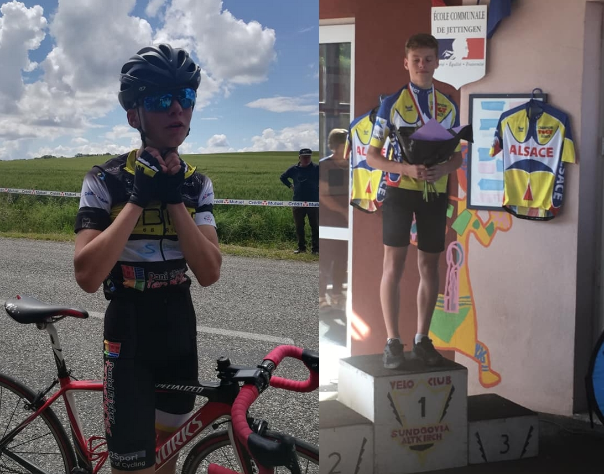
Chez les moins jeunes, Eric est devenu vice-champion d'Alsace chez les Vétérans, tandis qu'en Seniors 2-3, où le titre est revenue à Anthony Duringer (Etoile Cycliste de l'Est), Valentin termine 6ème au scratch et 3ème alsacien.
Les 3H VTT du VCSA : une première réussie !
Rédigé le 08 juin
Avec pas loin de 60 duos et une météo idéale, cette première édition des 3H VTT du VCS Altkirch a été un véritable succès, et les coureurs comme spectateurs ont pu apprécier l'immense travail des organisateurs et bénévoles. Côté résultats, la victoire est revenue au duo Hase-Vélotop constitué de l'impressionnant Harold Flandre (qui a signé le meilleur temps du parcours) et de Cyril Grangladen. Ils ont devancé le duo Gaetan Steger - Jérémy Jaeg, contre lesquels ils ont longtemps lutté avant de les distancer. Un altkirchois est également monté sur le podium, puisque la 3ème place revient à Franck Dietlin, accompagné de Yannick Guillou (EC Colmar). Le duo altkirchois (et mi-allemand) Wegner-Wininger prend de son côté la 5ème place.
On retrouve ensuite dès la 13ème place le premier duo mixte (Dieffenthaler - Schreiber), tandis que Morandin-Pfirsch remportent le classement féminin.
Les classements complets, incluant les temps par tour ICI.
L'article du journal l'Alsace (en libre accès!) ici, et la galerie photo de ce même journal là.
Retrouvez également les photos de Marie Nussbaumer, partenaire photographe de l'épreuve, ici.
GP de Dannemarie : Bolot prend sa revanche
Rédigé le 02 juin
C'est sous un grand soleil estival et avec des températures élevées que s'est déroulé ce dimanche le Grand Prix de Dannemarie (FFC 23J partiellement ouvert aux 1ère catégories). Le matin, le contre-la-montre au nouveau parcours, entre Dannemarie et Gildwiller-le-Mont, a été dominé par le spécialiste de la discipline Quentin Bezza (VCU Schwenheim), devançant de 22" son coéquipier Antonin Chatila Brunotte ainsi que Simon Bolot et Lucas Brondani, tous trois dans le même temps. Côté altkirchois, la meilleure performance a été signée par Arnaud Schlienger, 15ème.
L'étape de l'après-midi (100km) allait voir d'incessantes tentatives de renverser le maillot jaune Bezza, qui, bien qu'accompagné de cinq coéquipiers, a dû laisser partir vers le km 70 un groupe d'une quinzaine de coureurs dont Simon Bolot et Lucas Brondani, alors que son dauphin Chatila Brunotte posait pied à terre. Au terme d'un final à suspense qui a permis à ce groupe d'accentuer son avance, le premier à avoir franchi la ligne d'arrivée à Dannemarie a été Julien Nehr (ASPTT Mulhouse). Juste derrière, Simon Bolot terminait 3ème et s'adjugeait ainsi le classement général ! Une sorte de revanche pour celui qui, l'an passé, avait porté le maillot jaune à l'issue du contre-la-montre avant de céder face au collectif VCS Altkirch et à Julien Grimont, auquel il succède finalement au palmarès de l'épreuve. Seul altkirchois présent dans le groupe de tête, Jérôme Heinis termine 9ème de l'étape, et 12ème au classement général.
Les vainqueurs des différents maillots :
Maillot jaune - Ville de Dannemarie : Simon Bolot (AC Thann)
Maillot vert - Com'da : Julien Navarro (La Pédale d'Alsace)
Maillot rouge - Daniel Fricker Fermetures: Lucas Brondani (PE Haguenau - TRM)
Maillot blanc - RECK : Lucas Lopes (AC Bisontine)
La vidéo de l'arrivée par L'Alsace : ici
Les classements complets : là.
Victoire individuelle samedi et collective dimanche
Rédigé le 30 mai
Samedi, plusieurs coureurs altkirchois prenaient le départ de la course FSGT de Magstatt-le-Bas. En S4, Thomas est parvenu à se glisser dans la bonne échappée, composée de trois coureurs, et c'est au bout d'un long sprint final très disputé que Thomas a remporté sa première victoire (de sa carrière, après de nombreuses places d'honneur) ! La course des 2-3 était encore dominée par le quasi-intouchable* Alexandre Brandt, vainqueur en solitaire, tandis que Daniel s'est octroyé la 7ème place.
* Quatre victoires en cinq courses, uniquement battu à Fontaine par le seul... Eric Heitz :)
Dimanche, onze altkirchois étaient au départ de la cyclosportive FSGT "les Marcaires" (120km - 3100m d+). Dans une épreuve très relevée avec de nombreux coureurs internationaux et expérimentés, Julien B., spécialiste de la discipline, réalise une très belle performance et termine 15ème, Arnaud 29ème, Daniel 39ème (2ème de sa catégorie), et les bons temps également des autres concurrents ont permis au VCS Altkirch de remporter le classement par équipes (basé à la fois sur la performance et sur le nombre de coureurs) des Marcaires !
Tour du Territoire de Belfort, édition 2019
Rédigé le 20 mai
Daniel, Eric, Hugo-Quentin, Valentin et Antoine ont défendu ce week-end les couleurs altkirchoises sur le Tour du Territoire de Belfort, qui leur avait si bien réussi en 2018. La première étape, longue de 130km très vallonnés, s'est terminé par un sprint massif d'un petit peloton dans lequel figuraient Daniel et Hugo-Quentin, Valentin terminant à deux minutes et Antoine un peu plus loin. Pour Eric, le samedi a été synonyme de malchance, ayant abandonné après avoir subi une crevaison puis une chute quelques kilomètres plus loin.
Au contre-la-montre par équipes de dimanche matin, bien que réduits à quatre, les altkirchois ont pris la 13ème place à 28 secondes des vainqueurs (SCO Dijon).
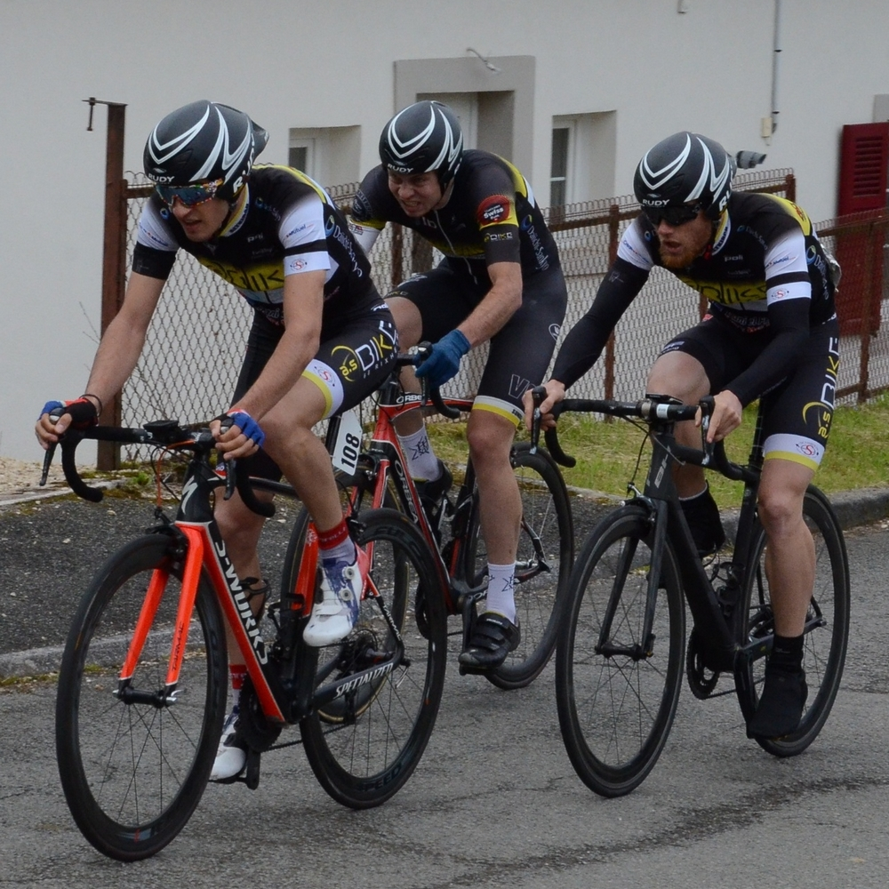 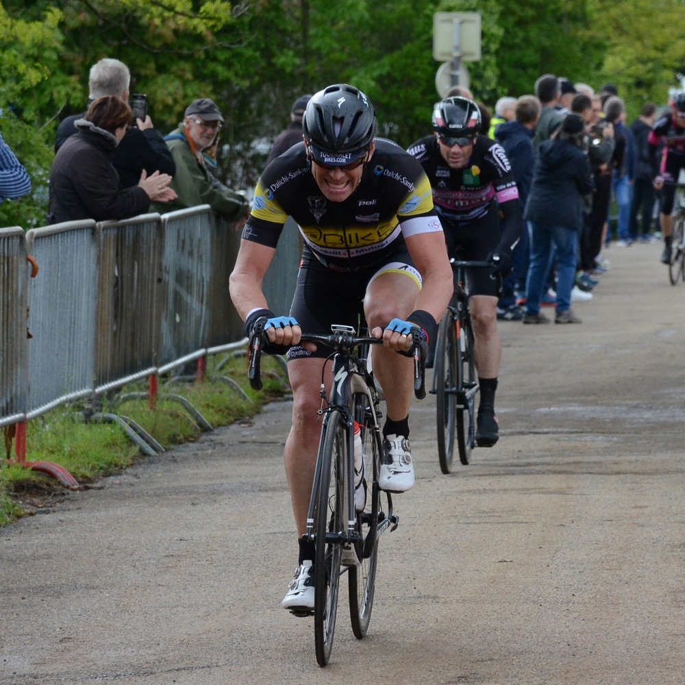
Photos Pierre Delunsch
L'après-midi, l'étape commençait sous la pluie, mais celle-ci allait heureusement cesser rapidement. Le peloton était encore groupé au sommet de la côte de Saint-Nicolas, mais juste après la descente, alors que Valentin était victime d'un bris de rayon, Daniel s'extirpait dans une échappée de deux puis de dix coureurs qui allait rapidement compter près de deux minutes d'avance sur le peloton. À la Tour de la Miotte, ces coureurs-là se disputaient ainsi la victoire, revenue - tout comme le maillot jaune - à Yann Philis, tandis que Daniel terminait 7ème, s'octroyant ainsi la 9ème place au classement général.
Y'a plus trop de saisons, mais encore des podiums !
Rédigé le 11 mai
Le mois de mai a commencé sous le soleil dans les Vosges, à Rammersmatt. Sur le difficile parcours proposé par l'AC Thann, l'épreuve 2-3-J a été remportée, comme l'an passé, par Lilian Schneider. Derrière, Julien B. et Jérôme terminent 19ème et 21ème, de belles performances puisque 110 coureurs étaient au départ.
Quatre jours plus tard, le soleil et le maillot manches courtes n'étaient que de lointains souvenirs. Hugo Hofstetter participait une épreuve encore plus atypique que la météo : la course derrière derny de Valentigney ! Avec la présence de légendes du vélo (Poulidor, Zoetemelk) et de belles têtes d'affiche au départ (Marc Sarreau, Morgan Kneisky), cela n'a pas empêché Hugo de remporter l'épreuve ! La journée en résumé ici, par l'Alsace.
Non loin de Valentigney, les coureurs FSGT prenaient part aux courses proposées à Montreux-Vieux. Comme à Beaucourt la semaine précédente, Matthieu remporte la course des minimes et Mathias termine 2ème en cadets ! En Vétérans 4, Philippe Wininger termine 8ème et en S4, Fabian Döring règle le sprint du peloton pour s'adjuger une 5ème place qui confirme de beaux progrès (à nouveau confirmés par une 4ème place à la nocturne de Lure vendredi!). Enfin, en 2-3, les altkirchois ont raté la "bonne" mais Hugo-Quentin et Antoine, présents dans les contre-attaques, terminent toutefois 9ème et 11èmes.
Comme souvent, les jours fériés de mai signifient pour les coureurs que les courses s'enchaînent ! Ainsi, mercredi à Vauthiermont (FSGT), sous une pluie quasi-continue, les altkirchois étaient de retour au combat. La meilleure performance revient à Daniel, deuxième de l'épreuve des 2-3 derrière l'intouchable Alexandre Brandt !
Sentheim et Beaucourt
Rédigé le 30 avril 2019
Naviguant entre averses, nuages, soleil et froid, les coureurs altkirchois sont nombreux à avoir couru ce week-end, répartis entre Beaucourt en FSGT et Sentheim en FFC. À Sentheim, le matin, en Pass' D3, René a signé le premier podium en FFC de la saison, en terminant à la 2ème place d'un sprint immortalisé par Maurice Kloetzlen :
L'après-midi, en 123J, Daniel, Hugo-Quentin, Jérôme, Florian et Valentin (pour sa première "toutes catés") étaient au départ, et ont montré le maillot aux avant-postes du peloton. Ils ratent cependant la bonne échappée - partie dès les premiers kilomètres, d'une épreuve remportée par l'allemand Lukas Baldinger.
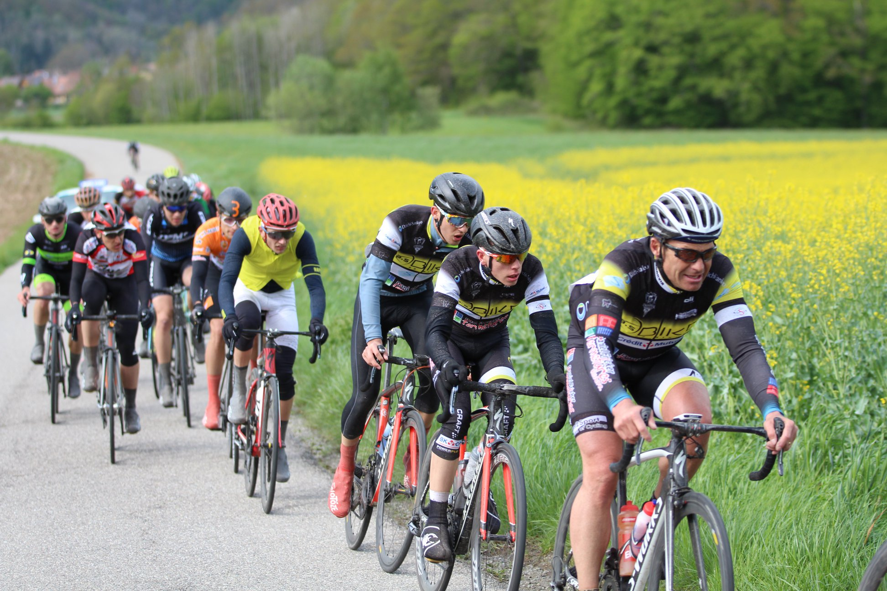
Du côté de Beaucourt, les jeunes ont montré l'exemple puisque Matthieu l'emporte chez les minimes (photo ci-dessous) et Mathias termine 2ènme chez les cadets ! Chez les plus grands, pas épargnés par la pluie, Nathan termine 10ème en S4 et Julien B. 12ème en 2-3.
Week-end du 13-14 avril
Rédigé le 20 avril 2019
Si les cyclistes sundgauviens ont pu ce week-end participer à diverses courses à proximité, le plus connu d'entre eux s'est rendu dans le nord de la France pour prendre part à un monument du cyclisme : Hugo Hofstetter a en effet participé à Paris-Roubaix. Et il ne s'est pas contenté de faire de la figuration, loin de là, puisqu'après s'être montré actif aux avant-postes pendant la course, il prend une 19ème place significative parmi les meilleurs coureurs de classiques du monde !
Du côté de la Franche-Comté avait lieu de vendredi à dimanche le Tour Haute-Saône sur lequel le VCSA avait brillé en 2018. Pas de victoire d'étape ni de maillot distinctif pour l'édition 2019, mais de belles performances tout de même avec notamment une 9ème place au contre-la-montre par équipes inaugural de 8.1km, dans un classement très serré, à seulement 14" des vainqueurs. Samedi, l'étape disputée dans la fraîcheur menait à Belfahy où, sous quelques flocons de neiges, Jérôme terminait 36ème, suivi par Daniel, Florian, Eric, Thibaud et Hugo-Quentin, respectivement 45ème, 90ème, 109ème, 113ème et 126ème (155 partants). La plus belle performance de cette étape revient sans doute au directeur sportif et mécanicien René pour sa réparation de chaîne cassée sur le vélo de Eric pendant le fictif ! Photo ci-dessous par Julien Grillot :
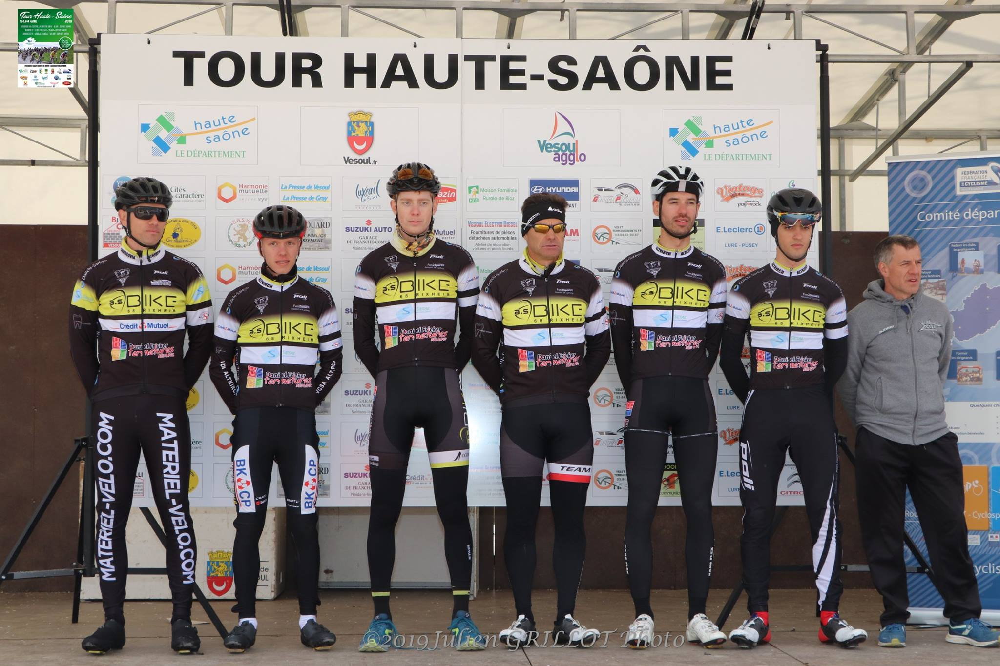
Dimanche, étape rapide, vallonnée et parsemée de nombreuses chutes entre Vesoul et Vesoul, via Gray. Jérôme a su se hisser dans le groupe de tête, parti à 30km de l'arrivée, pour terminer 21ème (22ème au général). Quelques dizaines de secondes plus tard, Daniel, Eric et Florian terminaient dans la cinquantaine de coureurs composant encore le peloton, tandis que Thibaud en finissait plus loin, gêné par une chute et à peine remis d'une grippe. Hugo-Quentin était également piégé suite à une chute, puis encore victime d'une crevaison qui l'a contraint à poser pied à terre.
Enfin, en FSGT, du coté d'Eteimbes (un contre-la-montre le matin et une course en circuit l'après-midi), le froid matinal n'a pas empêché Valentin Testud d'effectuer le CLM à près de 40km/h, établissant ainsi le meilleur temps des Seniors 4. Nathan réalisait le 9ème temps de cette catégorie.
L'après-midi, Valentin n'est pas parvenu à conserver son avance pour le classement général mais termine toutefois 6ème de la course, soit 3ème au général. Nathan montait lui sur le podium l'après-midi (3ème) et suivait par conséquent Valentin au général (4ème). Chez les 2-3, Julien B. terminait 5ème d'une course très exigeante (6ème au général).
Derniers résultats
Rédigé le 10 avril 2019
Deux week-ends sans course FSGT, deux courses en Franche-Comté prévues ces deux derniers week-ends : à Pelousey, le samedi 30 mars (1-2 & 3-J), à Sainte-Marie le lendemain (Pass' + 3J) puis à Ornans (2-3-J) ce dimanche. À Pelousey, sous un grand soleil et des températures estivales, Daniel intègre le top 10 de l'épreuve 3-J, dans laquelle plus de 120 coureurs étaient recensés au départ. Juste derrière, Eric termine 13ème. En 1-2, Florian termine 53ème (75 partants). À Sainte-Marie, où une course par handicap était proposé, Hugo-Quentin ont pris les 24ème et 25ème places (plus de 100 partants là encore).
Une semaine plus tard, l'été n'était qu'un lointain souvenir à Ornans : sous la pluie, et des températures oscillant entre 3 et 8°C (au sommet de la première ascension du parcours, à plus de 800 mètres, les bas-côtés étaient recouverts de neige!), Jérôme, Daniel et Florian bouclaient les 115km proposés respectivement 25, 35 et 36ème, dans ce qu'il restait d'un peloton très amaigri par un nombre conséquent d'abandons liés aux conditions météorologiques. La victoire est revenue au jeune stéphanois Jacques Lebreton.
Un podium venu d'un peu plus au sud est à noter dans le palmarès de cette quizaine, puisqu'en 4ème catégorie FSGT, Christophe Deis termine 2ème à Bourg-en-Bresse !
Pour le week-end à venir, qui s'annonce frais mais sec, tout le monde aura l'opportunité d'appuyer fort sur les pédales : de vendredi soir à dimanche, Daniel, Eric, Florian, Jérôme, Hugo-Quentin et Thibaud défendront les couleurs altkirchoises sur le Tour Haute-Saône. Ils tenteront de reproduire la superbe performance du VCSA sur l'édition 2018, dont la relecture du résumé ici rappellera de bons souvenirs ! Pour tous les autres, le rendez-vous est donné dimanche à Eteimbes, en FSGT, avec une épreuve qui sort de l'ordinaire puisqu'elle propose un contre-la-montre matinal puis une course l'après-midi.
Un dimanche de rêve à Seppois-le-Bas !
Rédigé le 24 mars 2019
2016, 2017 et 2018 avaient vu des coureurs altkirchois s'imposer dans l'épreuve reine, en 2-3, du GP de Seppois-le-Bas. Les coureurs au départ ne l'ignoraient pas et avaient à coeur de prolonger cette série, étant prêts à se montrer offensifs. Dès le deuxième tour, une première échappée se dessinait. On y retrouvait bien un altkirchois, l'expérimenté Daniel Fricker, accompagné d'Adrien Vuillier et de Cyril Comte. Le trio faisait son chemin avec une avance grimpant jusqu'à 1'15, tandis que derrière, un contre d'une dizaine de coureurs, parmi lesquels trois altkirchois (Eric, Thibaud et Hugo-Quentin), se formait. Cette situation a perduré plusieurs tours...
... mais l'animation se déroulait parallèlement dans l'autre course, celle des Seniors 4. Bien que le peloton y soit longtemps resté groupé (quoiqu'amaigri petit à petit par les difficultés successives du parcours), l'entame du dernier tour permettait à deux coureurs de s'extirper en force : Valentin Testud, recrue hivernale du VCS Altkirch, et Guillaume Schortaner (ACT Belfort). Le belfortain avait remporté cette même épreuve devant Valentin l'année passée mais le néo-altkirchois ne voulait pas manquer cette opportunité de prendre sa revanche. Et finalement, après que le duo a résisté au peloton durant le dernier tour, Valentin Testud dominait nettement le sprint et pouvait lever les bras pour célébrer sa première victoire ! Un peu plus loin, pour sa deuxième course, Nathan Scherrer trouvait les ressources pour chercher la 5ème place. On notera également la 46ème place de Vivien Samyn pour qui c'était la toute première course!
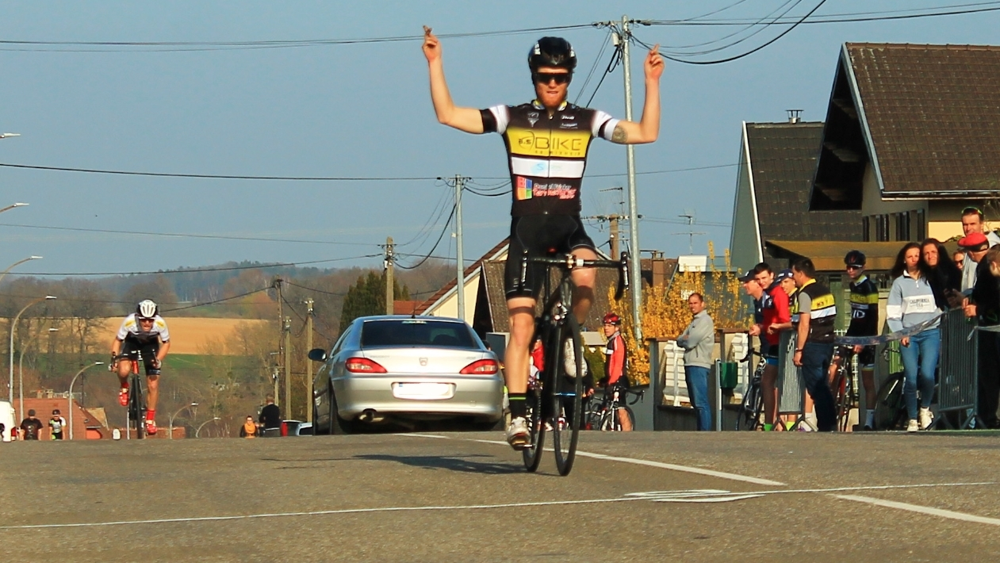
Pendant ce temps, l'écart du trio en tête de la course des 2-3 baissait à 20 secondes, et malgré une longue résistance, les trois fuyards étaient repris à 1,5km de l'arrivée. La victoire allait alors se jouer sur une course de côte dans la traversée pentue du village de Seppois-le-Bas. À ce petit jeu, c'est encore un néo-altkirchois qui s'est montré le plus fort : Thibaud Pierré remporte cette édition 2019, en débordant pour conquérir sa première victoire Hervé Gébel (CC Etupes) dans la dernière ligne droite. Le podium est complété par Jérémy Schweitzer (VC Wittenheim), tandis qu'Eric termine 6ème, Hugo-Quentin 12ème et Daniel 14ème.
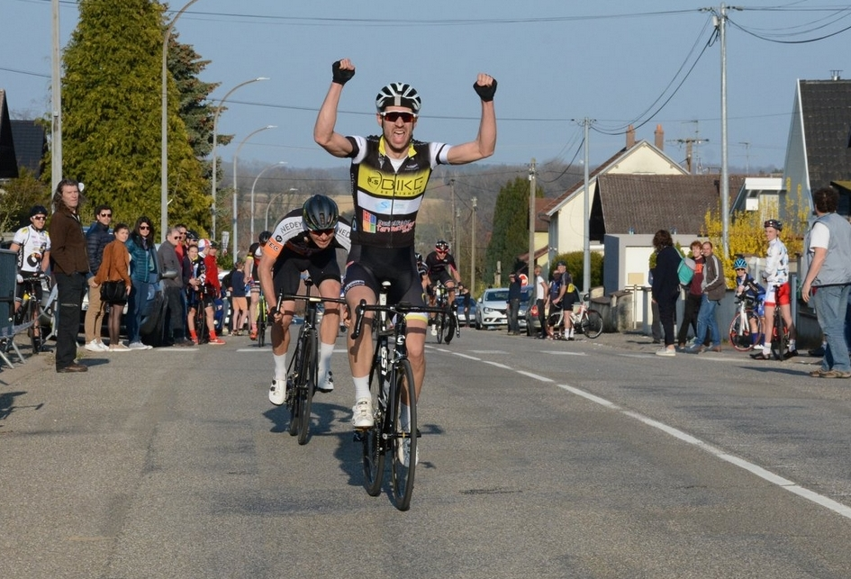
Avec du soleil, de la chaleur, deux victoires altkirchoises, un beau podium de Matthieu Lelarge chez les minimes (3ème), des pelotons bien garnis, de nombreux lots à la remise des prix ainsi que de nombreux bénévoles (dans les voitures, à la buvette, aux dossards, signaleurs, ...) à qui dire un grand MERCI, cette organisation du GP de Seppois-le-Bas édition 2019 a été un nouveau succès ! L'article sur la course du journal l'Alsace est ici, des albums photos sur Facebook ici, ici, et ici. Rendez-vous.. en 2020 !
Du VTT pour se mettre en jambes !
Rédigé le 23 mars 2019
Alors que la plupart des yeux sont d'ores et déjà tournés vers le Grand Prix de Seppois-le-Bas de ce dimanche (voir l'article de l'Alsace), quelques coureurs altkirchois ont choisi ce samedi de rouler sur les chemins du VTT FSGT du Centenaire de la SSOL. Ce fut notamment le cas de l'Allemand Sönke Wegner, qui a été le plus rapide des seniors-espoirs sur les sentiers, secs suite à une semaine sans pluie. Il décroche ainsi la deuxième victoire altkirchoise de la saison, tandis qu'Eric Heitz (qui a remporté la première, dimanche dernier à Fontaine) a encore performé puisqu'il termine 3ème de ce même VTT chez les Vétérans.
Retour demain sur la route, à Seppois, à 13h pour les vétérans, minimes et cadets puis à 15h pour les 2-3 - catégorie dans laquelle les altkirchois tenteront de chercher la victoire pour la 4ème année consécutive - et les Seniors 4.
Le numéro Eric Heitz pour ouvrir le compteur ! 🏆
Rédigé le 17 mars 2019
Il n'aura pas fallu attendre bien longtemps pour voir le compteur de victoires 2019 être débloqué : ce dimanche, à Fontaine (FSGT), dans la course reine des 2-3, Eric Heitz s'est imposé au terme d'une échappée solitaire débutée... dès le premier tour ! Malgré plusieurs contre-attaques, et notamment celle de Alexandre Brandt (CC Etupes), revenu à 20 secondes d'Eric à un tour de la fin, le héros du jour a tenu bon, résistant également aux conditions météorologiques terribles de l'après-midi. Avec de la pluie, du vent et 5°C, les abandons ont en effet été très nombreux (7 coureurs seulement ont terminé chez les 2-3) ; les coureurs étaient gelés et tremblaient encore des dizaines de minutes après être descendus du vélo. Daniel Fricker termine 6ème.
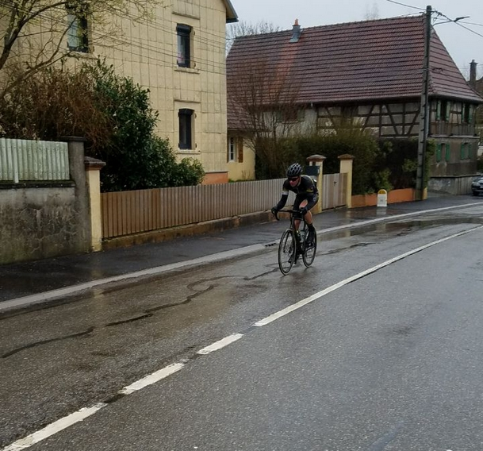
Mais l'épopée victorieuse d'Eric n'est pas la seule performance notable du jour à Fontaine : Chez les Seniors 4, Valentin Testud a su, lui aussi, résister au froid et se glisser dans une échappée : derrière l'intouchable vainqueur en solitaire, il termine à une très belle 3ème place ! Nathan Scherrer termine 10ème pour sa première (!) course et Fabian Döring 12ème.
En début d'après-midi, avant l'arrivée de la pluie (mais avec un vent d'autant plus fort), René terminait 6ème chez les Vétérans & Super Vétérans 4 et Mathias 5ème chez les cadets.
Avec des conditions à peine meilleures, à Erstein (3J FFC), Thibaud Pierré s'est glissé dans la bonne échappée et prend une 8ème place prometteuse ! Samedi, au Grand Prix des Carreleurs (FFC 123J), subissant les bordures et le rythme soutenu, il avait abandonné. Florian et Jérôme terminaient eux respectivement 33ème et 64ème de l'épreuve remportée par Émile Canal, transféré cet hiver du VCS Altkirch au CC Etupes...
Le rendez-vous est pris pour ces coureurs qui tenteront de briller à nouveau dimanche prochain à domicile, au Grand Prix de Seppois-le-Bas. Dans le village de Hugo, qui a encore montré l'exemple aujourd'hui en terminant ce dimanche 5ème du Ronde van Drenthe masculin, aux Pays-Bas (le résumé détaillé par le journal l'Alsace est ici) !
La saison est lancée !
Rédigé le 11 mars 2019
La saison FSGT et la saison FFC en Alsace sont à présent lancées. Le début de la première s'est fait à Blaesheim où plusieurs altkirchois étaient présents et ont cumulé quatre top 10 dont trois dans la course des 2-3. Dans une arrivée pour punchers, Eric Heitz termine 7ème, Thibaud Pierré termine 8ème et Daniel Fricker 10ème. Chez les Seniors 4, Thomas Linder termine 9ème. Pour la début de la seconde, ce dimanche à Wittenheim (123J), un fort vent était de la partie. Sur des longues lignes droites dégagées et avec une liste d'engagées garnie en excellent coureurs, venus pour certains de loin, les bordures ont été intenses. Eric Heitz termine à une honorable 70ème place.
Prochaines échéanes le week-end prochain avec le GP des Carreleurs samedi (123J), Fontaine (FSGT) et Erstein (3J) dimanche.
Que la saison commence !
Rédigé le 1er mars 2019
Quand le mois de mars commence, il est habituel de - enfin - retrouver le plaisir de sortir les épingles pour accrocher les premiers dossards aux maillots... Ce sera le cas ce dimanche même si certaines habitudes vont toutefois changer, puisqu'au lieu de voir la saison commencer comme les années précédentes au Critérium du Printemps ou à Seppois pour la saison FSGT, ce sera (en FSGT) dans le Bas-Rhin, à Blaesheim, sur le GP du Grand Hamster, une nouvelle organisation de l'Etoile Cycliste de l'Est. Avec une météo qui s'annonce très clémente pour un premier dimanche de mars, on retrouvera au départ plusieurs altkirchois (Antoine, Julien, Thibaud en 2-3, Fabian et Thomas en S4), et on espère pour eux de bons résultats ! Un premier podium voire une première victoire lanceraient la saison de la plus belle des manières... ;-).
Suivez les aventures du VCS Altkirch en stage en Toscane ci-dessous, jour après jour ! Une semaine organisée de main de maitre par Alain Lamy - Fun2Sport.
Un départ matinal depuis Altkirch, quelques heures de route à observer le thermomètre monter, et voilà nos altkirchois en Toscane, précisément à Castagneto Carducci. Tous avaient hâte d'enfourcher leur bicyclette et se sont hâtés de sortir une tenue de vélo de leurs valises de sorte à pouvoir rouler 1h pour admirer le coucher du soleil depuis leur nouvelle région, avec en cadeau de bienvenue un super panorama sur la Corse !
À peine l'appétit de kilomètres ouvert par la petite sortie de la veille, les altkirchois sont, en ce dimanche matin, partis explorer davantage de la région : avec entre 50 et 115 kilomètres au compteur au retour, la matinée a permis d'explorer davantage de la région (notamment une superbe ascension avec de nombreux virages vers Sassetta et un passage à deux pas de Casino di Terra, qui rappelleront d'anciens stages à beaucoup de monde). L'après-midi, une petite sortie pour aller observer la mer à San Vincenzo était au programme. Mais, mieux que les mots, voilà les images !
Ce lundi, pas de bureau, d'usine ou d'outils pour nos coureurs expatriés pour la semaine : dès 9h, tous ont pris la route (leur open space géant pour la semaine, en quelque sorte). L'essentiel du groupe est allé affronter les pentes qui mènent à Micciano, haut lieu des stages du VCS Altkirch, certains optant en supplément pour l'ascension vers la commune voisine de Libbiano. Si ces deux villages, au sommet de leurs collines, permettaient de profiter pleinement du soleil, les températures auront beaucoup varié sur les routes précédentes, la faute à des traversées de nuages denses coincés dans certaines vallées toute la matinée. Au retour à l'hôtel, les compteurs indiquaient entre 110 et 130km et plus de 2000 mètres de dénivelé positif : autant dire que le repas proposé par le chef de l'hôtel était mérité et apprécié !
Après deux belles journées de vélo, les coureurs ont, ce mardi, opté pour... une troisième journée de vélo ! Une partie du groupe a toutefois passé la matinée à découvrir les produits du terroir sur le marché de Cecina, pendant que cinq coureurs optaient pour une boucle de 50km. Après le déjeuner, tous ont en revanche pris la direction du nord en vélo, neuf d'entre eux allant jusqu'au village de Montecatini Val di Cecina (voir photos ci-dessous). Avec en supplément l'ascension vers Guardistallo, 100km ont été parcourus et une décision a été prise à l'unanimité : demain, c'est journée récup' !
Programmes variés ce mercredi : certains ont opté pour la visite de la magnifique ville de Florence, la plupart ont préféré une matinée vélo avant une après-midi de tourisme et de thermes. Lors de la matinée vélo, qui faisait office de sortie récupération (80km tout de même), le groupe principal a eu le privilège d'être accompagné par Silvia Parietti, championne d'Italie en 2005, avec qui ils ont pu partager un savoureux café italien à Cecina.
L'après-midi, nombreux sont ceux qui ont profité d'une des diverses piscines thermales de la région. Ils ont même sans doute profité de la plus belle des environs, à Sassetta, dans un cadre paradisiaque (photo ci-dessous). Quelques autres altkirchois ont opté pour une séance bien-être un peu différente et plus gourmande avec une glace artisanale à Cecina. Dans les deux cas, on espère que cela aura permis d'améliorer la récupération des corps un peu fatigués par les kilomètres du début de stage car demain, de nombreux tours de roues sont prévus en direction de Volterra !
Le beau temps a persisté ce jeudi et comme prévu, nos cyclistes ont pris la route de Volterra, où à l'issue d'une ascension d'environ 8km, ils ont pu profiter des belles places et ruelles pavées, d'un superbe point de vue, et pour certains d'une pizza XXL. Des calories qui ont pu être brûlées sur le trajet vallonné du retour (avec un détour par Casole d'Elsa pour certains). Entre 120 et 155km en fin de compte !
Pour cette dernière journée en Toscane, hors de question de ne pas rouler bien que les jambes piquent un peu pour tout le monde ! En conséquence, une sortie pas trop difficile (du moins en terme de dénivelé) vers le sud - peu exploré jusqu'alors. Après une savoureuse descente après Sassetta, cumulant plus d'une cinquantaine de virages (formidable opportunité de travailler les trajectoires), la moitié du groupe est remontée sur Campiglia Marittima tandis que l'autre est allée en bord de mer, notamment au petit village au fort patrimoine archéologique de Populonia (photos ci-dessous).
Après le déjeuner, tous les stagiaires ont profité des dernières heures en Toscane pour réaliser leurs derniers projets transalpins, principalement... acheter de l'huile d'olive et manger des glaces (les réserves de lipides étant primordiables pour les cyclistes ;-)). La soirée a ensuite été pleine de bonne humeur et de musique avec un apéritif pour célébrer un anniversaire, un excellent repas de plus à l'hôtel, et pour conclure un grand gâteau d'anniversaire personnalisé accompagné de champagne servi par Fausto, l'excellent et sympathique chef cuisiner de l'hôtel.
▼ Bilan :
Tradition depuis une dizaine d'années au sein du club, le stage en Toscane s'est fait cette année à un nouvel endroit, à l'hôtel Zi Martino au pied de Castagneto Carducci. À quelques kilomètres seulement de la mer, au pieds des vallons, l'endroit était idéal, et les repas comme l'hébergement à l'hôtel ont comblé tous les participants ! Autre nouveauté : pas une goutte de pluie ! La météo a été exceptionnelle toute la semaine, comme ça n'avait jamais été le cas auparavant. Même le vent était quasiment nul ! Cyclistes comme accompagnateurs ont pu savourer la Toscane sous le soleil, offrant des décors comme ceux des clichés ci-dessous, pris à Castagneto Carducci :
Sur le bilan comptable, entre la petite sortie du samedi d'arrivée et le dernier vendredi, tous les coureurs ont pu cumuler des kilomètres, jusqu'à 800 pour certains ! Avec pour ces coureurs pas moins de 10 000m de dénivelé positif, dont certaines ascensions qui ont été escaladées à des rythmes soutenus laissant présager de belles saisons. Ci-dessous la carte des routes découvertes pendant ce séjour !
À la fin de cette semaine, il est inévitable de remercier Alain Lamy - Fun2Sport pour, entre autres, l'organisation de ce séjour et le rôle de traducteur franco-italien. Si les photos vous donnent envie d'aller explorer la Toscane à bicyclette, n'héhistez pas à consulter les nombreux séjours proposés par Fun2Sport en Toscane ici !
Hugo démarre sur les chapeaux de roues !
Rédigé le 4 février 2019
Deuxième course et premier sprint massif: il n'aura fallu attendre davantage pour voir Hugo monter sur le podium d'une course professionnelle pour cette nouvelle saison. Au Trofeo Palma, ce dimanche, sa pointe de vitesse lui a permis de terminer 3ème de l'épreuve, derrière Marcel Kittel et Timothy Dupont. Un résultat déjà significatif puisqu'il devance des coureurs comme André Greipel ou John Degenkolb. La prochaine échéance pour Hugo devrait être le Tour de la Provence, vers la mi-février.
2019 & Challenges FSGT 2018 !
Rédigé le 18 janvier 2019
2019 a débuté, et pour la plupart des coureurs du VCS Altkirch, l'entraînement a repris en vue des premières courses en mars ! À l'air (frais) extérieur quand la météo et le temps libre le permettent, sur le home-trainer sinon... mais dans la bonne humeur toujours ! Certains d'entre eux profiteront bientôt du soleil, puisque du 16 au 23 février, ils iront sillonner les routes de Toscane, précisément autour de Castagneto Carducci, grâce à l'organisation de Fun2Sport !
Mais si 2019 a bien commencé, il n'est pas encore trop tard pour faire le bilan de la saison FSGT 2018 à la lumière des podiums réalisés dans les classements finaux des challenges que la fédération propose, en route, cyclo-cross et pour ses grimpées.
Cyclo-cross :
En Seniors 4, les deux premiers rangs sont occupés par des altkirchois ! Avec 781 points et 10 participations sur les 11 courses proposées, Alexis Ballester remporte le challenge et devance Fabian Döring, qui fait partie des quatre coureurs, toutes catégories confondues, à avoir pris le départ (et franchi la ligne d'arrivée!) de l'intégralité des épreuves !
En Vétérans, Eric Heitz termine 2ème, échouant à deux petits points du vainqueur en raison de son absence sur la dernière épreuve. Avec pas moins de 6 top10 sur les dix épreuves auxquelles il a pris part, il a été à la fois régulier et performant !
Route :
En Seniors 2 - catégorie qui ne compte que 12 classés -, Florian Kohler remporte le challenge DNA!
En Juniors 4, c'est Antony Wurtz qui a cumulé le plus de points! Dans un classement serré, il devance son dauphin de six points. Ses places de l'année, dans l'ordre, méritent un coup d'oeil, tant elles reflètent sa forte progression au court de la saison : 30-31-19-16-23-11-13-10-6-2-7-1-4-4 !
Chez les Féminines, troisième place pour Sylvie Riedlé !
Chez les Minimes, deuxième place pour Antoine Caoduro !
Grimpées :
Pas assez réguliers sur les différentes épreuves, bien que performants (trois 3ème places pour Julien Batlle en trois participations!), les altkirchois ne sont pas parvenus à se hisser sur les podiums du challenge DNA des grimpées. En Seniors 1, on notera toutefois que Thibaud Pierré - recrue hivernale - l'emporte, qu'Antoine Mattern termine 4ème, Julien 6ème, et Valentin Testud - recrue également - 8ème!
Le Vélo Club Sundgovia Altkirch vous souhaite à tous d'excellentes fêtes de fin d'année ! À très vite pour de nouvelles aventures...
Soirée avec Hugo à Seppois
Rédigé le 27 novembre
Ce mardi soir, Hugo Hofstetter a organisé une rencontre avec ses supporters à la Salle Polyvalente de Seppois-le-Bas, lors de laquelle il a également remis un chèque au VCS Altkirch pour couvrir les frais de sa licence au club :
Vous pouvez consulter, en accès libre, le résumé de la soirée par Gilles Legeard (L'Alsace) ici !
Mutations ! ☟
Rédigé le 26 novembre
Ils porteront les couleurs du VCS Altkirch pour la saison 2019 ☺ :
Hugo-Quentin Marchand - 3ème du Prix de Seppois-le-Bas - 4ème du Prix Art de Vivre Brayé
Thibaud Pierré - Vainqueur de la grimpée Le Waldbach, 2ème des grimpées des Bagenelles et du Salbert
Valentin Testud - 2ème du Prix de Seppois-le-Bas - 5ème du Prix Agri-Center (S4)
Lucas Brondani (-> PE Haguenau) - Vainqueur des cyclo-cross de Wittenheim, Saint-Bernard et Ilzach - 2ème à Rammersmatt & Friesenheim, 3ème à Montigny-lès-Vesoul
Émile Canal (-> Charvieu-Chavagneux IC) - Vainqueur de la 2ème étape du Tour Haute-Saône - 4ème du Grand Prix de Sentheim
Lucas renoue avec la victoire !
Rédigé le 11 novembre
Dans le Haut-Rhin ce dimanche, Lucas a une fois de plus emmené le maillot altkirchois sur la plus haute marche du podium, au cyclo-cross FFC d'Ilzach. Dominateur de l'épreuve, il y devance Cyrille Fretz, son dauphin, qu'il a relégué à plus d'une minute et trente secondes !
Les lecteurs attentifs de ce site auront remarqué qu'avec cette performance, le compteur de victoires et de podiums de la saison 2018 dépasse celui de la saison passée !
Ce superbe cliché est signé par "Loïc Leplat Photography", présent sur de nombreux cyclo-cross cette saison et dont vous pouvez consulter l'album de ce dimanche ici!
Dans la course des masters à Ilzach, Eric Heitz prend la 4ème place. Samedi, à Muhlbach-sur-Munster, trois altirchois se sont également hissés dans le top 12, avec Félix Döring à la 5ème place, Alexis Ballester à la 11ème et Eric Heitz à la 12ème.
Abonnés aux deuxièmes places
Rédigé le 1er novembre
Les deux derniers cyclo-cross ont été à la fois satisfaisants et frustrants, les altkirchois y ayant très bien figuré mais à chaque fois privés de la victoire. Ce dimanche à Belfort, Lucas a dû se contenter de la deuxième place, une très belle performance néanmoins puisque le vainqueur est Damien Mougel, connu pour ses qualités dans la discipline dont il est champion Grand Est en titre.
Ce jeudi, au traditionnel cyclo-cross de Soultz, ce même Lucas a encore dû se satisfaire de la seconde place, mais cette fois derrière Lilian Schneider (AC Thann), qu'il avait devancé à Saint-Bernard il y a une dizaine jours. Plusieurs autres coureurs altkirchois ont pris part à l'épreuve seniors espoirs de Soultz, notamment Alexis Ballester qui termine 12ème, Christophe Deis 15ème et Guillaume Annoye 26ème. Mais en cette Toussaint, la course des Masters s'est soldée sur un podium sacrant un coureur de l'AC Thann devant un alktirchois: Jérémy Bolli l'emporte en effet devant Eric Heitz (comme à Saint-Bernard), ce dernier confirmant sa régularité aux avant-postes depuis le début de la saison de cyclo-cross, en FFC comme en FSGT. Sébastien Stoltz termine à la 12ème place de l'épreuve.
Photos toutes signées Aurélie Tscheiller à Soultz, avec de gauche à droite les seniors Guillaume, Christophe, Alexis, Lucas (et Christophe encore en arrière-plan) puis les masters Eric et Sébastien.
Hugo vainqueur de l'UCI Europe Tour !
Rédigé le 26 octobre
On le savait depuis la Tacx Pro Classic, mais cela ne fait que quelques jours que c'est officiel : Hugo Hofstetter remporte le classement annuel individuel de l'UCI Europe Tour !
C'est donc avec l'esprit tranquille et victorieux que Hugo peut profiter de sa coupure de fin de saison, lui qui a également remporté la Coupe de France Pro.
Double victoire ce week-end !
Rédigé le 21 octobre
Lucas Brondani s'impose ce dimanche sur le cyclo-cross de Saint-Bernard FFC ! Sous le soleil et sur le parcours sec autour de l'église de la commune, il a assumé son statut de favori devant les nombreux spectateurs venus assister aux épreuves, et a remporté l'épreuve reine de cette journée de sport organisée par le VCS Altkirch ! Après avoir effectué la majeure partie de la course seul en tête, il devance Lilian Schneider et Sönke Wegner, et signe ainsi son deuxième succès de la saison après le Cross Tour à Wittenheim fin septembre.
Jérôme Heinis termine lui 8ème de l'épreuve. En masters, on retrouve également un altkirchois sur le podium puisque Eric Heitz termine à la deuxième place !
Samedi, lors du cyclo-cross FSGT de Heimsbrunn, l'épreuve toutes catégories a déjà vu une victoire altkirchoise puisque Sönke Wegner y a levé les bras ! Eric Heitz rentre également dans le top 10, à la 8ème place.
Hugo vainqueur de la Coupe de France Pro !
Rédigé le 6 octobre
Il était dans une situation favorable pour l'emporter ce matin, mais une chute la semaine passée et des conditions météorologiques délicates pouvaient laisser envisager n'importe quel scénario. Finalement, à l'issue du Tour de Vendée remporté par l'Allemand (presque un local également, pour les haut-rhinois) Nico Denz, Hugo Hofstetter s'adjuge le classement général final de la Coupe de France Pro!. Il remporte aussi logiquement le classement du meilleur jeune, tandis que le Team Cofidis remporte le classement par équipes. La victoire d'Hugo est une première pour un coureur alsacien, une preuve de plus de sa régularité tout au long de la saison, et surtout une grande fierté pour le VCS Altkirch!
Rendez-vous le samedi 8 juin 2019 pour les 3H VTT du VCS Altkirch!
Rédigé le 3 octobre
Qu'il soit numérique ou papier : prenez votre agenda, et dans l'espace réservé au 8 juin 2019, notez bien : les 3H VTT du VCS Altkirch ! Cette nouvelle épreuve en duo aura lieu sur les hauteurs d'Altkirch, à la Palestre. Plus d'infos à venir très prochainement, mais vous pouvez déjà suivre l'événement sur sa page Facebook!
Pour ce qui est du point résultats, dans le thème du VTT, on notera les 3ème et 4ème places respectives de Grégory Weber et Eric Heitz au VTT FSGT de Rixheim en Vétérans, ainsi que la 9ème place en Seniors de Maxence Schummer ! Et côté cyclo-cross, Lucas réalise une nouvelle belle performance ce dimanche puisqu'il termine deuxième du cyclo-cross de Bischwiller!
Lucas vainqueur au Cross Tour de Wittenheim!
Rédigé le 29 septembre
L'automne a commencé dimanche dernier et Lucas n'a pas attendu pour lever les bras ! À l'occasion du Cross Tour à Wittenheim, disputé en trois étapes réparties sur le week-end, Lucas a en effet remporté deux étapes et le classement général : après avoir terminé 2ème de la première étape samedi, derrière Damien Mougel, il a en effet fait parler son explosivité pour réaliser le meilleur temps du contre-la-montre dimanche matin (ce qui lui a permis de récupérer le maillot noir de leader) et a récividé l'après-midi en dominant l'épreuve finale, et donc le classement général ! Malgré la forte concurrence, avec des coureurs comme Laurent Spiesser, Lilian Schneider ou encore Cyrille Fretz, Lucas a fait parler son expérience dans la discipline et a démontré une grande forme et maîtrise de ses nouveaux vélos Specialized. C'est d'ailleurs un doublé que le VCS Altkirch a réalisé puisque son dauphin n'est autre que Sönke Wegner, habitué à disputer les cyclo-cross de la région sous les couleurs altkirchoises, tout comme son compatriote Félix Döring (8e).
De belles performances sont également à souligner du côté des Masters puisque Eric Heitz prend la 5ème place et Gregory Weber la 9ème.
Photo Vélo Club Wittenheim - Classements ici - L'article de l'Alsace ici
Les altkirchois en mode CLM avec succès !
Rédigé le 23 septembre
Dimanche dernier, le Vélo Club Luron organisait le Championnat d'Alsace - Franche-Comté FSGT de contre-la-montre individuel. La plus belle performance altkirchoise revient à Gisèle Wurtz, qui conquiert le titre chez les Féminines !
Mathias chez les minimes et Alexandre chez les cadets prennent tous les deux la cinquième place, tandis qu'Antony échoue au pied du podium en juniors à l'issue de ce contre-la-montre vallonné.
La veille, le contre-la-montre proposé par le VC Soultzia proposait un dénivelé encore un peu plus conséquent, puisqu'il menait au sommet du Col Amic. Et, exactement comme la semaine passée au Col du Hundsrück, Julien Batlle prenait la 3ème place, à 36" (et 32" au Hundsrück) de Gaëtan Steger, vainqueur des deux épreuves.
Encore une victoire à Rougemont le Château !
Rédigé le 3 septembre
La dernière course sur route en ligne FSGT de la saison s'est déroulée ce dimanche à Rougemont le Château, et les altkirchois en ont profité pour s'illustrer une dernière fois. Chez les minimes, deux altkirchois sont montés sur le podium, mais la victoire leur a échappé (Antoine et Mathias terminent respectivement 2ème et 3ème). Elle n'a cependant pas échappé à Christophe Deis dans la course des S4-J4, puisque celui-ci remporte la course en solitaire après s'être isolé de ses deux compagnons d'échappée ! Antony, après l'avoir emporté à Jettingen la semaine passée, a réglé le sprint du peloton pour prendre la 4ème place, tandis que Fabian Döring, pour sa 10ème course FSGT de la saison sous les couleurs altkirchoises, a pris la 20ème place.
Le VCS Altkirch organisait ce dimanche le Prix Agri-Center à Jettingen, épreuve sous l'égide de la FSGT.
Dans un premier temps, du côté des Minimes, Mathias Tarbouriech l'emportait devant l'altkirchois Mathias Gast ! Chez les cadets, Alexandre Nanni prenait la 5ème place alors qu'en même temps, du côté des Seniors-Juniors 4, victoire altkirchoise avec Antony Wurtz qui dominait tout ses adversaires dans l'ultime ascension pour empocher sa première victoire dans la catégorie !
Dans la deuxième série de courses, notre féminine Sylvie Riedlé s'est jointe aux Vétérans 4 et y a pris une belle 6ème place !
Enfin, dans la course réservée aux coureurs de 2ème et 3ème catégorie, les altkirchois auraient souhaité imiter Antony et signer une seconde victoire altkirchoise. Arnaud Schlienger et Julien Batlle ont réussi à prendre la bonne échappée de cette course, mais c'est, comme en S4-J4, un junior qui l'emporte, puisque Julien Nehr (ASPTT Mulhouse) a été le plus rapide au final. Arnaud prend tout de même une très belle 2ème place et Julien la 4ème, Antoine Brun (ACT Belfort) se chargeant de compléter le podium.
Puisque c'est l'été et qu'il fait chaud, on a logiquement pu voir plusieurs coureurs altkirchois mouiller le maillot de bain du club sur les quelques épreuves organisées à proximité du Sundgau. Non-loin de ce dernier, Florian, Lucas, Julien B., Arnaud, Jérôme et Antoine sont allés escalader le Ballon d'Alsace dans le cadre de la course habituelle du 15 août (2-3-J). Aucun d'entre eux n'est parvenu à monter sur le podium au sommet, mais ils ont tout de même démontré de belles qualités de grimpeurs puisqu'ils terminent respectivement 5ème, 8ème, 15ème, 18ème, 24ème et 40ème, avec de beaux temps d'ascension et avec 56 coureurs présents au départ donné à Belfort. Photos de ces derniers (de droite à gauche) par Au Fil des Instants:
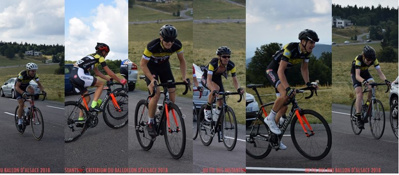
Trois jours plus tard, c'est toujours au coeur du magnifique cadre offert par le massif vosgien, autour du lac de Xonrupt, qu'Arnaud, Jérôme et Florian ont montré le maillot dans les différentes échappées qui ont animé la course. Hélas, aucune d'entre elles n'a été au bout et, au sprint massif, seul Arnaud parvient à rentrer dans le top 10 (7ème). Jérôme termine 18ème et Florian 31ème.
Le dimanche, Lucas s'est rendu à Soultz-sous-Forêts en toutes catégories, où il a pris la 18ème place de l'épreuve remportée par l'allemand Fabien Holbach.
Tour Alsace et Grimpée le Waldbach
Rédigé le 6 août
Ce dimanche, la Ville de Dannemarie accueillait l'arrivée de la dernière étape de la plus grande course cycliste d'Alsace : le Tour Alsace. En mai, la ligne d'arrivée de Dannemarie avait permis à Julien Grimont d'enfiler le maillot jaune du Grand Prix de Dannemarie. Cette fois-ci, faute de participer à l'épreuve (UCI 2.2), les altkirchois n'ont pas pu chercher le maillot jaune (qui est allé sur les épaules de Geoffrey Bouchard). Mais le VCSA était quand même présent sur ses routes sundgauviennes, en compagnie de Rodolphe Gaudin, Paul Belmondo et Denis Schmitt, grâce au travail de préparation d'Alain Lamy (Fun2Sport).
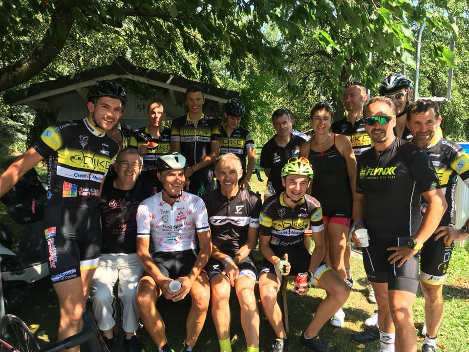
Retrouvez d'autres photos dans le diaporama du journal l'Alsace ici.
Côté course, quatre altkirchois prenaient le matin le départ de la grimpée le Waldbach FSGT, reliant Ammerschwihr à Labaroche. Deux d'entre eux terminent sur le podium, puisque Florian Kohler et Julien Batlle terminent respectivement 2ème et 3ème, battus seulement par Thibaud Pierré. Antoine Mattern termine de son côté 18ème et Alexandre Nanni 41ème (4ème cadet) pour sa reprise de la compétition après plusieurs mois d'arrêt.
L'après-midi, ce sont aussi quatre altkirchois qui ont affronté le raidar de la côte d'arrivée de la course de Harol (Vosges, 2-3-J). Sous la canicule, Daniel Fricker est le premier d'entre eux à l'arrivée (18ème), suivi par Jérôme Heinis (22ème).
Tour du Piémont Haut-Rhinois
Rédigé le 9 juillet
Comme tous les ans, les altkirchois se sont rendus ce week-end sur le Tour du Piémont Haut-Rhinois, avec pour défendre les couleurs du club Lucas, Julien, Daniel, Jérôme et Florian.
Sur l'habituelle étape plate du samedi, le sprint massif a été évité en raison d'une échappée, dont faisait partie Florian (5ème), formée dans le dernier tour et qui a résisté pour 7" au retour du peloton, dans lequel tous les autres coureurs se trouvaient.
Le contre-la-montre du dimanche matin, lui aussi habituel (ce qui ne le rend pas moins difficile), engendrait de premiers écarts déjà conséquents. Florian, Lucas et Julien le terminaient avec respectivement les 4ème, 13ème et 20ème temps, le premier des trois prenant par conséquent la 2ème place au classement général, à 3" du leader. Si cette place laissait entrevoir de belles possibilités pour l'ultime étape de l'après-midi, Florian réalisait une course à contre-temps et lâchait prise tôt dans l'ascension du Couvent Saint-Marc, la deuxième des trois au programme. Jérôme, bien en jambes de son côté, est allé chercher la 12ème place devant Lucas, 18ème et par conséquent 13ème au classement général, à 1'13 du vainqueur de l'épreuve, Gautier Chaudey. Grâce encore à la 38ème place de Daniel l'après-midi, les coureurs achevaient tout de même ce week-end ensoleillé en montant sur le podium puisque le VCSA en termine 3ème au classement par équipes !
Les altkirchois placés, notamment sur les cyclosportives
Rédigé le 9 juillet
Avec les chaleurs arrivent les cyclosportives : L'Alsacienne, notamment, et ses trois épreuves sur lesquelles se sont illutrés les altkirchois. Sur la plus difficile d'entre elles (167km, 4000m d+), Daniel prend la 6ème place (vainqueur dans sa catégorie) et Lucas la 8ème ! Dans la plus courte (90km, 2500m d+), c'est du côté des féminines que le VCSA a brillé : Gisèle Wurtz termine en effet 2ème au scratch ! Dans l'épreuve intermédiaire (125km - 3700m d+), Julien Batlle termine en effet 5ème. Une semaine plus tard, ce dernier termine 3ème au Grand Huit Vosgien, confirmant ses qualités de grimpeur !
Ce même week-end de compétition avait commencé, dès le vendredi soir, avec une très belle 2ème place de Philippe Wininger en Pass' à Vieux-Charmont, après s'être glissé dans la bonne échappée. Sur cette même nocturne, mais en 2-3-J, Emile terminait quand à lui 7ème. Et deux jours plus tard, cette fois en toutes catégories, il terminait 8ème du Grand Prix Coanus, remporté par un certain... Fabien Canal.
Les jeunes montrent l'exemple
Rédigé le 22 juin
Avec un peu de retard, retour sur le week-end précédent, le dernier d'un printemps réussi pour le VCSA.
Samedi, à Boron, les jeunes ont été les plus performants puisque les minimes réalisent un doublé, Antoine l'emportant devant Mathias. En Seniors 4, Antony a confirmé sa bonne forme du moment et a pris la deuxième place !
Dimanche, les plus-jeunes-encore ont été sur le devant de la scène dans la capitale sundgauvienne, puisque le VCSA y organisait le Grand Prix de la Ville d'Altkirch pour les écoles de cyclisme (pré-licenciés à benjamin). La relève altkirchoise y a très bien figuré, avec Maxime (3e en poussins), Constantin, Elias et Anna (3e, 5e et 6e en pupilles) ainsi que Matthieu et Donovan (4e et 5e en benjamin).
Les classements complets de cette épreuve ici.
Les plus grands se sont de leur côté rendu dans le Bas-Rhin, où Émile, Daniel, Julien B, Lucas et Jérôme terminent dans le peloton à l'issue du très exigeant GP de la Vallée de Villé (toutes catégories).
Pour commencer l'été de la meilleure des façons (donc sur le vélo), les coureurs altkirchois se rendront à Vieux-Charmont (Pass' puis 23J FFC) dès ce vendredi soir, puis à Danjoutin (FSGT) ou sur l'Alsacienne (Cyclosportive) ce dimanche !
Les altkirchois présents - et efficaces - sur tous les fronts
Rédigé le 11 juin
Les altkirchois ont été présents sur plusieurs courses ce week-end, samedi comme dimanche. On vous fait le récapitulatif de leurs nombreux résultats.
Samedi, à Vendenheim, Christope Deis a terminé 2ème en Pass' D1-D2, battu seulement par son compagnon d'échappée Geoffrey Lang (VC Wittenheim).
Dimanche, à Friesenheim :
Christophe a poursuivi sur sa bonne lancée et termine 4ème dans la même catégorie !
En 23J, Lucas a encore une fois su prendre le bon wagon. Il prend une très belle 2ème place du sprint disputé par l'échappée, signant ainsi son troisième podium de la saison en 2ème catégorie ! Présent dans un contre, Jérôme termine 10ème.
Et du côté de Frotey-les-Lure, course support aux championnats d'Alsace et de Franche-Comté FSGT :
Chez les vétérans, tous réunions pour l'occasion (72 partants), 2ème place de Daniel au scratch. Battu par un Franc-Comtois, il termine donc 1er alsacien et est par conséquent champion d'Alsace Super-Vétéran FSGT ! Eric termine 6ème et René 14ème.
Dans la même course, un autre maillot de champion régional acquis : en cherchant la 38ème place, Claude Kohler est devenu champion d'Alsace anciens!
Chez les Seniors 4, Thomas a été aux avant-postes, comme toujours. Il termine 5ème.
En Seniors & Juniors 2-3, la performance peut-être la plus remarquable de la journée est signée par Antony Wurtz, qui court habituellement en Junior 4 mais qui a participé à la course reine pour ce championnat : Antony termine 6ème au scratch de la course après avoir été actif du début à la fin de l'épreuve de près de 100km !
Enfin, la seule victoire au scratch du week-end, qui nous vient d'un coureur allemand et sur un VTT : Sönke Wegner a dominé le VTT FSGT de Didenheim ! Second coureur altkirchois engagé sur l'épreuve tout-terrain, Maxence Schummer termine 12ème.
Quelques photos de cette journée, avec dans l'ordre Antony, Christophe, Lucas et Claude... (dont deux photos signées "Au Fil des Instants")
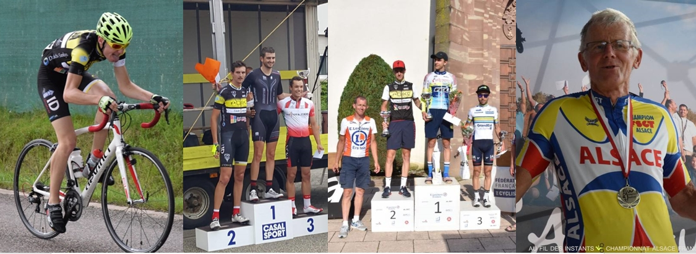
Un maillot de plus ! Et autres excellentes performances...
Rédigé le 4 juin
Lancés sur une bonne dynamique après notamment la victoire de Julien à Dannemarie dimanche dernier, les altkirchois ne se sont pas rendus à Dimbsthal (Bas-Rhin) sans ambition. Et de l'épreuve au parcours sélectif et faisant office de Championnat Grand Est FFC, ils ne sont pas revenus sans victoire, mais avec un maillot de champion régional en Seniors 3 et une médaille de vice-champion en Seniors 2 !
En Seniors 3, après une course d'usure, deux coureurs du VC Spinalien disposaient encore de 40 secondes d'avance sur le peloton à l'entame du dernier des sept tours au programme. Mais à 10km de l'arrivée, dans l'ascension principale, Florian s'extirpait du peloton et rejoignait, au terme d'un gros effort, les deux coureurs en tête. Le trio restait groupé jusqu'à la dernière ligne droite et, au sprint, Florian dominait ses deux adversaires pour s'adjuger le titre régional ! Il va donc troquer la tenue noire et jaune du VCS Altkirch pour la tunique blanche de champion Grand Est pour les prochaines courses.
Pendant ce temps, en Seniors 1 et 2, Lucas avait aussi dû fournir un effort conséquent pour rejoindre l'échappée principale du jour. Mais aucun membre de cette échappée n'a pu résister à Simon Combes, favori de l'épreuve, qui a mis à profit ses qualités de grimpeur pour s'imposer en solitaire. Derrière, Lucas prend la 7ème place de la course et termine ainsi vice-champion Grand Est en 2ème catégorie derrière Damien Mougel. Julien et Emile terminent quant à eux 13ème et 20ème.
Les altkirchois présents dans le Bas-Rhin avaient donc le sourire sur la route du retour. C'était également le cas de leurs équipiers présents à Bourogne (Territoire de Belfort) en FSGT, et en particulier de Mathias, 4ème en minimes, et de Thomas, 3ème en Seniors 4, qui est donc monté sur le podium pour la troisième fois consécutive ! De quoi envisager une victoire pour la prochaine course à Frotey-les-Lure, le 10 juin.
À la conquête d'un nouveau maillot ?
Rédigé le 31 mai - Mis à jour le 2 juin
Tandis que cetains altkirchois seront présents ce dimanche à Bourogne (FSGT), ils seront une dizaine à se rendre sur le parcours sélectif proposé autour de Dimbsthal (Bas-Rhin) pour les championnat Grand Est FFC. Arnaud, Émile, Julien G. et Lucas tenteront, en 1-2, de surprendre les 1ères catégories et leurs armadas pour leur chiper le titre de champion Grand Est Senior, et/ou Espoir pour Émile et Julien. Pour ce qui est du titre 3ème catégorie, on retrouvera dans les rangs altkirchois Antoine, Daniel, Eric, Florian, José, et Julien B.. Tous les coureurs engagés auront à coeur de rallonger la série victorieuse du VCS Altkirch, et d'aller enfiler un nouveau maillot distinctif après les maillots jaunes de Florian (TTB), Hugo Hofstetter (Tour de l'Ain) et Julien (Dannemarie), un second maillot de champion Grand Est après celui de Daniel en 2017 en master M4.
En attendant, Arnaud, Florian et Julien G. se sont rendus ce vendredi soir en Haute-Saône pour la nocturne de Luxeuil-les-Bains (FFC 23J). Dès le 2ème des 47 tours, Arnaud a faussé compagnie au peloton, accompagné du spécialiste du cyclo-cross Anthonin Didier (SCO Dijon). Petit à petit, le duo a creusé l'écart sur le peloton (max 1'15), dans lequel Julien et Florian tentaient d'empêcher les contre-attaques de se former. Si Anthonin Didier est parvenu, à 4 tours de l'arrivée, à se défaire de notre coureur, c'est néanmoins une très belle deuxième place qu'a prise Arnaud sur cette nocturne !
Grand Prix de Dannemarie : Julien Grimont vainqueur !
Rédigé le 27 mai
Le VCS Altkirch rêvait de remporter, à domicile, le Grand Prix de Dannemarie (FFC 2-3-J-PO). Et bien c'est chose faite, puisqu'à l'issue du prologue matinal et de l'étape de l'après-midi, le maillot jaune offert par la ville de Dannemarie est allé sur les épaules de Julien Grimont ! Une victoire qui s'est véritablement jouée dans les six derniers kilomètres mais qui est aussi le fruit d'un énorme travail collectif tout le long de l'étape et de la journée. En effet, dès le matin, les altkirchois ont réalisé de belles performances puisque Florian, Lucas, Arnaud et Julien se sont classés respectivement 6e (à 13"), 7e (à 18"), 8e (à 19") et 10e (à 25") du contre-la-montre individuel remporté par Simon Bolot (65 partants). Avec cinq coureurs à qui reprendre du temps pour espérer l'emporter au classement général, la tâche s'avérait délicate pour l'après-midi. Mais, soucieux de mettre toutes les chances de leur côté, les altkirchois ont durant tout l'après-midi multiplié les offensives, les uns après les autres, obligeant leurs adversaires directs à fournir de gros efforts. Mais cela n'empêchait pas un regroupement à Balschwiller à 6kms de l'arrivée, moment qu'a choisi Julien pour placer une offensive. Les adversaires, usés, ont peiné à limiter l'écart et, lancé à toute allure et accompagné par Cyrille Fretz - qui remporte l'étape - Julien franchit la ligne avec une avance suffisante pour remporter le classement général !
Une journée très bien organisée par le Vélo Club Sundgovia Altkirch, dont on ne remerciera jamais assez les très nombreux bénévoles ! Présents aux croisements, à la buvette, dans les voitures ouvreuses, suiveuses, aux dossards... ou encore en selfie avec le héros du jour...
Maillot jaune (Ville de Dannemarie) : Julien Grimont
Maillot rouge (Commune de Gildwiller) : Cyrille Fretz
Maillot vert (Les commerçants et artisans de Dannemarie et sa région) : Cyrille Fretz, porté par procuration par Arnaud Schlienger
Maillot blanc (RECK) : Antonin Chatila-Brunotte
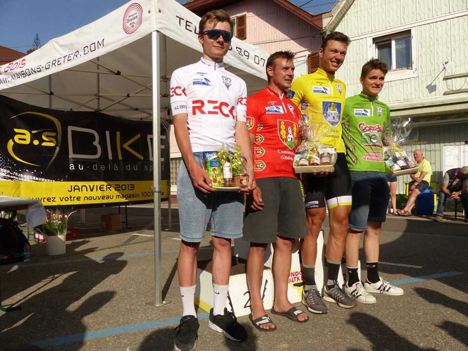
Les résultats complets (matin, après-midi, classement général) ici.
Bon rétablissement enfin aux coureurs qui ont chuté en début de course !
Daniel Fricker s'impose à Magstatt-le-Bas!
Rédigé le 26 mai
En guise d'échauffement pour le Grand Prix de Dannemarie, plusieurs coureurs étaient présents ce samedi à Magstatt-le-Bas pour le prix Gestimmo FSGT. Dans l'épreuve reine, en 2-3, Daniel Fricker s'est imposé en solitaire après s'être débarassé de ses compagnons d'échappée, avec lesquels il avait préalablement faussé compagnie au peloton dès le premier tour. À l'issue d'une course marquée par la chaleur, il devance Julien Nehr et Mickael Jacquot, et est accompagné dans le top 10 par Antoine et Florian (9e et 10e) pour ce qui est des altkirchois.
Quelques minutes plus tôt, en Seniors 4, Thomas Linder prenait une très belle 3ème place après s'être glissé, lui aussi, dans la bonne échappée.
À noter également les performances de minimes, puisqu'Antoine termine 4ème et Mathias 8ème dans cette catégorie.
Première victoire pour Hugo Hofstetter chez les professionnels !
Rédigé le 19 mai
Pour le plus grand bonheur de tous ses supporters altkirchois, Hugo Hofstetter a remporté ce vendredi la 1ère étape du Tour de l'Ain, en dominant le sprint massif ! Après de nombreuses places d'honneur, c'est son premier succès chez les professionnels. Cette victoire lui a également permis de recevoir le maillot jaune de leader de l'épreuve. Elle intervient après 5 semaines sans compétition pour Hugo, qui préparait son retour et que l'on a pu croiser sur les courses régionales régulièrement (Galfingue, Sentheim, ...) et encore ce dimanche au Tour du Territoire de Belfort pour encourager ses partenaires de club. Photo ci-dessous par Mathilde l'Azou (mathildelazou.com)
Lisez son interview d'après-course par DirectVelo ici et revivez les deux derniers kilomètres avec les images d'Eurosport ici.
Cette victoire inspirera-t-elle ses camarades altkirchois ? Réponse dimanche à la Route du Comté Petite puis lundi à Montigny-lès-Vesoul.
Du maillot noir et jaune à celui tout jaune sur le Tour du Territoire de Belfort !
Rédigé le 14 mai
Comme tous les ans depuis 2012, cinq coureurs altkirchois ont participé au Tour du Territoire de Belfort (3-J), disputé ce week-end en 3 étapes. Samedi, sous le soleil, Daniel, Julien B., Florian, Eric et Alexis prenaient ainsi le départ pour 130km vallonnés. Une étape usante que les trois premiers ont terminé dans le peloton, réduit à une cinquantaine d'unités, franchissant la ligne à peine 8 secondes après le vainqueur dolois du jour.
Dimanche matin, avec une température divisée par deux par rapport à la veille, les cinq altkirchois enfilaient leurs casques profilés pour le contre-la-montre par équipes de 7km proposé autour de Valdoie. Parti à 10h05, le VCS Altkirch bouclait le parcours en 9'50 et établissait un nouveau temps de référence ! Encore neuf équipes pouvaient devancer les altkirchois mais une par une, elles y échouaient. Juste avant 11h, la dernière équipe en terminait en 9'59 : La victoire revenait donc au VCS Altkirch et Florian, Daniel et Julien prenaient les trois premières places du classement géneral avant la dernière étape, Florian héritant ainsi de la tunique jaune de leader pour... 1 seconde !
Avec des écarts si minimes, tout pouvait encore basculer lors de l'ultime étape de l'après-midi, dont le départ a été donné sous la pluie et dont l'arrivée était jugée 80km plus loin au sommet du Salbert. Après un départ rapide, quatre coureurs prenaient la poudre d'escampette et accumulaient près de 2 minutes d'avance à mi-course. Les altkirchois prenaient alors leurs responsabilités et Alexis, aidé par Eric, se chargeait de ramener le peloton sur les fuyards avant le pied du Salbert.
Une course de côte commencait alors, et si Florian ne parvenait pas à suivre quelques coureurs, il se battait jusqu'au dernier mètre pour limiter les écarts et franchissait la ligne en 6ème position à 12" du vainqueur. Tous les altkirchois présents ont dû attendre plusieurs minutes avant que les commissaires ne révèlent la victoire de Florian au classement général pour 2 petites secondes (le 4ème n'étant qu'à 3"). Un maillot jaune acquis grâce à une équipe exceptionnelle tout le week-end, et dont la performance (avec également la 10ème place de Julien au classement général) a été récompensée par la victoire du VCS Altkirch au classement par équipes de l'épreuve, qui consacre certes les coureurs mais aussi tous les encadrants et supporters présents tout le week-end.
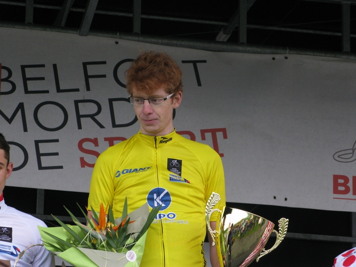
Une victoire le jeudi et une autre le vendredi !
Rédigé le 12 mai
Entre jours de congés et nocturne le vendredi soir, cette semaine (bien que non terminée) aura été chargée. Et couronnée de succès : d'abord jeudi, à Merkwiller, Christophe Deis a dominé les Bas-Rhinois et l'a emporté en solitaire en Pass' D1, au bout des 74 kilomètres vallonnés de l'épreuve.
Puis vendredi, c'est dans les rues peuplées du centre-ville de Lure que les coureurs ont fait l'animation. Chez les vétérans dans un premier temps, René Schlienger a terminé 10ème. Puis à 21h, dans la course des 2-3 et Seniors 4, après un départ rapide, Florian s'est retrouvé en tête avec Adrien Vuillier juste avant la mi-course. Grâce à une entente parfaite, ils prennent un tour à tout le monde et c'est Florian qui gagne finalement sous l'éclairage des lampadaires lurons!
Jeudi également, Lucas, Arnaud et Julien G. ont pris le départ d'une course de toutes catégories à Saint-Étienne-lès-Remiremont. Une course très rapide qui s'est conclue par un sprint massif où la meilleure place altkirchoise est revenue à Lucas (15ème).
GP Art de Vivre Brayé & GP de Vauthiermont : la bonne forme d'Antoine !
Rédigé le 9 mai
Deux courses FSGT se sont déroulées en l'espace de 3 jours, dimanche à Montreux-Vieux puis mardi à Vauthiermont. De nombreux altkirchois y étaient présents, et la plus belle performance a eu lieu le dimanche puisque chez les Seniors 4, Antoine M. remporte la course et Thomas se charge de prendre la 2ème place. Cette victoire a engendré une montée de catégorie pour Antoine, qui s'est dès mardi distingué dans sa nouvelle catégorie : il a en effet pris la bonne échappée et a terminé à la 6ème place à Vauthiermont en 2-3 !
Pour les autres performances de ces deux courses, on retiendra les deux podiums consécutifs d'Antoine C. en minimes, les 7e et 8e places d'Eric et de Daniel en 2-3 à Montreux-Vieux, ainsi que la belle 5ème place de Stéphane en V4 à Vauthiermont ! Prochain rendez-vous FSGT dès ce vendredi pour la nocturne de Lure !
Lucas 2ème à Rammersmatt !
Rédigé le 2 mai
Le traditionnal Prix du Muguet s'est déroulé ce mardi à Rammersmatt. Le matin, cela devient également une tradition cette année, René Schlienger est allé cueillir une troisième place en Pass´ D3-D4.
L'après-midi, on retrouvait au départ du prix PTM Soft (2-3-J) Alexis, Arnaud, Daniel, Eric, Florian, Jérôme, Julien B. et Lucas, tous bien décidés à performer sur les pentes du jour. Si durant la course, chacun d'entre eux a participé à la lutte aux avant-postes, c'est finalement Lucas - vainqueur en 2016 de l'épreuve (en 3-J) - qui a eu la force de se hisser dans le groupe de 4 coureurs qui allaient se disputer la victoire. Et sur la ligne, Lucas termine 2ème, battu à peine d'une demi-roue par Lilian Schneider (AC Thann), comme en atteste la photo ci-dessous.
Derrière, on retrouve Jérôme à la 13ème place, Julien, Florian et Daniel respectivement aux 27, 28 et 29ème puis Eric à la 50ème.
Un excellent dimanche de plus !
Rédigé le 30 avril
À Sentheim en toutes catégories FFC comme à Beaucourt en FSGT, les altkirchois ne sont pas restés dans l'anonymat ce week-end :
En Alsace tout d'abord, où, dans une course au niveau relevé remportée par Arnaud Pfrimmer (CC Etupes), Émile Canal cherche la 4ème place, Lucas termine 11ème, Daniel 24ème, Arnaud 27ème et Eric 34ème ! Le matin, René a réédité sa performance de Galfingue et reprend la 2ème place en Pass' D3-D4 ! (Photo ci-dessous par Aurélie Tscheiller)
Du côté de Beaucourt, c'est d'abord Antoine C. qui a montré en minimes la voie à suivre en l'emportant en minimes (avec, certes, seulement 2 partants). Un peu plus tard, chez les Seniors 4, Christophe et Antoine se sont hissés dans l'échappée, et au sprint, Antoine a fait parler sa puissance pour chercher la 2ème place ! Christophe termine 5ème.
Enfin, dans la course des 2-3, Florian, Julien, Alexis et Hugo (pour sa première course!) étaient dans le coup, puis Florian leur a faussé compagnie en partant en solitaire à près de 50km de l'arrivée. Bénéficiant du travail de ses équipiers, il n'a jamais été revu et l'emporte en solitaire ! Derrière, Julien prend une belle 4ème place dans un contre et Alexis règle le sprint du peloton restant pour terminer 8ème.
À noter enfin la 8ème place de Jérôme en 2-3-J à Morteau, très bien placé comme à son habitude! Pour la suite, rendez-vous à Rammersmatt demain, comme tous les 1er mai !
Petite retrospective
Rédigé le 25 avril
Et si nous jetions un coup d'oeil 10 ans en arrière ?
Il y a 10 jours, vous avez pu voir l'équipe du VCSA sur le Tour Haute-Saône 2018. Mais qui se souvient de l'équipe qui a participé à la Ronde de Haute-Saône (son appellation jusque l'an dernier) en...2008 ? La voici en photo !
Cette année, Emile Canal a remporté la seconde étape de l'épreuve. Sauriez-vous reconnaître qui a remporté cette même étape de l'édition 2008 ? (indice: il est monté sur un podium du Tour de France...)
Photos "Au fil des instants" / tour-haute-saone.fr.
En cas de difficulté, pour identifier tous ces coureurs, vous pouvez vous aider des résultats de l'édition 2008.
Un podium et plusieurs places d'honneur ce dimanche
Rédigé le 22 avril
Les altkirchois se sont rendus ce dimanche sur deux courses : sous une chaleur estivale, la plupart étaient à Galfingue, en Pass' Cyclisme ou en 3-J, tandis que Lucas et Émile étaient à Ornans en 2-3-J.
Dès le matin, comme souvent, René Schlienger a performé et termine 2ème en Pass' D3-D4, Claude terminant 7ème. Personne n'a pu faire mieux l'après-midi mais les résultats sont quand même très bons : à Ornans, sur un circuit très sélectif (près de 2000m de dénivelé positif), Lucas prend une belle 6ème place et Emile 12ème, tandis qu'à Galfingue, Jérôme, Daniel (échappé toute la course) et Florian terminent respectivement 5ème, 8ème et 9ème.
Une victoire d'étape, la victoire par équipes et trois maillots distinctifs : c'est le bilan pour le moins réjouissant de ce Tour Haute-Saône 2018 (FFC 23J).
Daniel, Florian, Jérôme, Arnaud et Émile ont représenté ce week-end les couleurs sundgauviennes sur les deux étapes de 120km proposées aux coureurs. Dès la première étape, Arnaud - hyperactif - se retrouve dans une belle échappée, rapidement rejoint par Émile. Si le groupe est hélas repris à 20km de l'arrivée, Émile empoche toutefois 5 points au classement des sprints, et Arnaud voit son comportement très offensif récompensé par le maillot bleu du plus combatif !
Après une nuit de repos à Rioz, la deuxième étape (Vesoul-Vesoul) s'élance, avec toujours énormément de spectateurs aux bords des routes. Comme la veille, une échappée - cette fois sans altkirchois - se détache, et on craint alors de ne plus la revoir au sein du peloton et dans l'esprit du DS. Mais Arnaud et Daniel lancent un contre, Émile fait la jonction et les 3 altkirchois, avec une dizaine d'autres coureurs, foncent en direction de Vesoul, rattrapant l'échappée et amenant Émile au sprint dans les meilleures conditions qui soient : celles qui lui permettre de conquérir la victoire d'étape !!! Davantage "Forêt Noire" que simple "Cerise sur le gâteau", cette performance permet à l'équipe de remporter le classement par équipes, et à Émile de terminer meilleur jeune ainsi que meilleur sprinter de l'épreuve!
Un week-end exceptionnel, rendu possible également par les accompagnateurs altkirchois, dont vous pouvez voir quelques clichés ci-dessous, tandis que les classements sont ici.
Le VCSA sur une élite nationale, et un podium en FSGT
Rédigé le 8 avril
Alors qu'il y a moins d'un mois, les chutes de neige engendraient encore l'annulation de courses, ce week-end a été digne de l'été ! Des conditions appréciées sur les deux courses au programme du week-end.
La première, sur laquelle se sont rendus les 4 coureurs de 2ème catégorie FFC du club : Arnaud, Emile, Julien G. et Lucas ont en effet participé à Dijon - Auxonne - Dijon. Une course de niveau Elite Nationale (1-2), niveau auquel on a rarement vu des sundgauviens ! À l'issue des 155 kilomètres de course (parcourus à près de 46km/h !), Emile Canal termine 34ème (il est le troisième coureur de 2ème catégorie à franchir la ligne), Lucas 83ème, Julien un peu plus loin tandis qu'Arnaud a subi une crevaison à l'entrée de Dijon alors qu'il était encore dans le peloton.. Une sacrée performance collective vu le niveau de l'épreuve !
Pour de nombreux autres altkirchois, moins de kilomètres à parcourir. Autour du lac de Kruth-Wildenstein, en FSGT, les altkirchois ne se sont pas contentés de contempler le charmant paysage : Chez les 2-3, Julien B., Eric et Florian se retrouvent échappés dans un groupe de 10 coureurs un peu après la mi-course. Malgré leur supériorité numérique et plusieurs tentatives, ils ne parviendront pas à se détacher : les 10 coureurs, tous usés, se disputent la victoire au sprint. À ce jeu là, la victoire revient à Anthony Duringer (Etoile Cycliste de l'Est), tandis que Florian parvient à monter sur le podium, à la 3ème place. Eric et Julien terminent respectivement 7e et 8e.
Quelques minutes plus tôt, chez les S4, scénario similaire : sprint en comité restreint (7 coureurs), parmi lesquels Antoine Mattern, qui prend la 4ème place!
Un bon rétablissement enfin à Antoine C., qui a chuté sans trop de gravité chez les minimes.
Les Schlienger sur les podiums
Rédigé le 3 avril
En ce long week-end de Pâques, plusieurs courses étaient au programme. Samedi, en toutes catégories FFC à Pelousey (Franche-Comté), six altkirchois étaient présents, dans un peloton au niveau très relevé. Trois d'entre eux ont pu tirer profit des quatre minutes d'avance offerts aux 3-J pour passer les trois quarts de la course aux avant-postes, même si finalement, tout le monde franchit la ligne dans le peloton.
Lundi, deux rendez-vous au programme : Fontaine, en FSGT, et Golbey, en FFC (23J). À Fontaine, René Schlienger termine 2ème au sprint chez les Vétérans 4. Chez les 2-3, Eric Heitz doit se satisfaire de la médaille (ou du lapin?) en chocolat, 4ème après sa 5ème place à Seppois.
À Golbey, Arnaud, Emile, Lucas et Florian ont pris part à un critérium au parcours particulièrement usant. Les trois premiers se retrouvent après un tiers de course dans la bonne échappée (constituée de 18 des 90 coureurs présents au départ), et leur travail collectif se voit récompensé par la 3ème place d'Arnaud Schlienger, devancé par Julien Navarro (vainqueur en solitaire) et Simon Bolot. Lucas et Émile terminent 10 et 11ème, Florian 25ème.
Retour sur le stage en Toscane
Rédigé le 28 mars
(Re)plongez-vous en images en Toscane, à Casole d'Elsa, avec cette vidéo (à visionner sur YouTube) créée par Alain Lamy (Fun2Sport) :
Doublé altkirchois à Seppois-le-Bas !
Rédigé le 25 mars
Au GP de Seppois-le-Bas ce dimanche, organisé par le VCSA, les altkirchois se devaient de prolonger la série victorieuse entamée il y a 2 ans par Ludovic Klein puis prolongée par Jérôme Heinis. Et bien c'est chose faite, et avec la manière : au terme d'une course marquée par une énorme performance collective du VCSA, Florian Kohler et Arnaud Schlienger terminent à deux - en franchissant la ligne dans cet ordre - avec plus d'1min30 d'avance sur le reste de l'échappée dans laquelle figurent Eric Heitz et Julien Batlle, 5e et 6e.
Merci à "Au fil des instants" pour les photos.
Dans les autres courses de la journée, 3 top 10 : Sylvie Riedlé chez les Vétérans 4 et Féminines (5e), Antoine Mattern chez les Seniors 4 (7e) et Alexandre Nanni chez les cadets (5e).
Tous les classements sont ici et l'article de l'Alsace est là!
Hofstetter encore 2ème et en tête de la Coupe de France Pro
Côté pro, Hugo Hofstetter était présent dans les Pays de la Loire ce week-end. 6ème samedi de la Classic Loire-Atlantique, Hugo a vu sa régularité récompensée au classement de la Coupe de France Pro dont il a pris la tête. Et ce dimanche, il termine 2ème de Cholet-Pays-de-la-Loire derrière Thomas Boudat !
Le maillot altkirchois également bien représenté à Wintershouse
Pour ceux qui n'ont pas eu la chance de pouvoir courir à Seppois, il fallait se rendre dans le Bas-Rhin, à Wintershouse (FFC). Les épreuves de 3-J et de 1-2 se sont toutes deux terminées au sprint. En 3-J, Jérôme Heinis prend une belle 5ème place, tandis qu'en 1-2, Emile Canal, Lucas Brondani et Julien Grimont terminent dans le peloton après s'être mêlés à la lutte dans un contexte très relevé !
Seppois-le-Bas à la une !
Rédigé le 18 mars
C'est un week-end à regarder du vélo à la TV qui s'achève : Samedi, pendant Milan - San Remo, 5 coureurs altkirchois prenaient le départ du Grand Prix des Carreleurs (FFC 1-2) dans le Bas-Rhin. Si Lucas Brondani a été présent aux avant-postes un certain temps, conditions météo et hypoglycémie auront finalement forcé tous les sundgauviens à mettre pied à terre. Un peu moins au nord, mais avec des conditions au moins tout aussi délicates, Eric Heitz prenait pendant ce temps la cinquième place en vétérans du VTT FSGT organisé à Habsheim. Dimanche, toujours dans le Bas-Rhin, c'est à Friesenheim que plusieurs coureurs avaient prévu de se rendre (Pass' + 3J). Mais les chutes de neige du samedi soir ont contraint les organisteurs à reporter la course.
À moins d'aller faire de la luge, il ne restait donc qu'à allumer la télévision et regarder la course du seul licencié du VCSA engagé ce dimanche : Hugo Hofstetter, très en jambes ces temps-ci (3e à la Nokere Koerse ce mercredi), au Grand Prix de Denain. Au terme d'une course à suspense, le sprinteur originaire de Seppois-le-Bas prend une très belle - bien que frustrante - deuxième place ! Seul un coureur belge parti dans le dernier kilomètre le devance.
C'est justement là où Hugo a grandi que le VCS Altkirch vous donne rendez-vous dimanche prochain, pour le Grand Prix de Seppois-le-Bas FSGT ! La température devrait être un peu plus élevée d'ici là, alors réservez votre dimanche !
Premières nouvelles de 2018
Rédigé le 5 mars
À l'occasion des vacances scolaires, une partie des membres et amis du VCS Altkirch sont actuellement en stage en Toscane, à Casole d'Elsa. Les coureurs profitent de cette semaine, organisée d'une main de maître par Fun2Sport, et du climat italien (relativement) favorable pour sillonner les routes toscanes dans la bonne humeur habituelle.
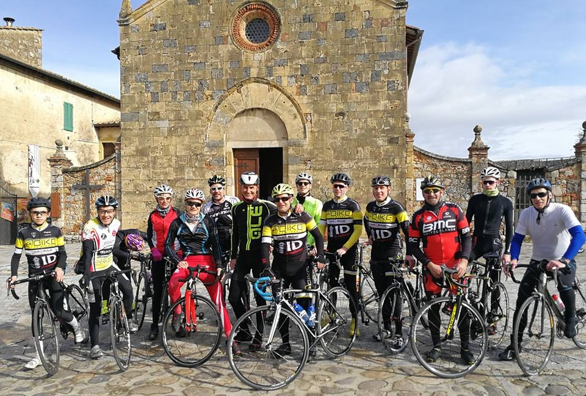
Si l'entraînement bat son plein, c'est notamment parce que le début de saison approche ! C'est en effet ce dimanche au Grand Prix de Wittenheim (FFC 123J) que seront accrochés les premiers dossards altkirchois, avec déjà plus de 130 kilomètres au programme et au moins autant de coureurs au départ...
Assemblée Générale 2017
Rédigé le 4 décembre
Ce samedi avait lieu l'Assemblée Générale annuelle du Vélo Club, organisée dans la Salle de la Tuilerie de Hagenbach. Tous les membres du club ont participé à l'Assemblée Générale menée par le président Gilles Hartmann et son équipe, avant de partager un repas dans une ambiance conviviale. Les coureurs, et notamment les nouvelles recrues, ont rangé pour un soir leurs maillots pour enfiler une chemise, afin de faire le bilan de la saison écoulée et de préparer la saison à venir.
L'occasion également de découvrir le vélo dont seront équipés plusieurs coureurs pour la saison 2018, grâce à notre partenaire a.s Bike, qui fournit en effet 6 vélos Specialized Tarmac Expert ETap, que vous pouvez admirer ci-dessous...
Sönke Wegner sur les podiums
Rédigé le 2 novembre
En octobre et novembre, le samedi est souvent synonyme de cyclo-cross FSGT. Le 21 octobre, c'était à Heimsbrunn que s'étaient donné rendez-vous les spécialistes de la discipline. Et comme souvent, c'est Cyrille Fretz qui s'est imposé. La deuxième place y est revenue au coureur allemand du Vélo Club Sundgovia Altkirch Sönke Wegner. Le 28 octobre, un peu plus au nord, c'est à Wattwiller que Sönke est monté une nouvelle fois sur le podium, à la 3ème place. L'indétrônable Cyrille Fretz et Hervé Ridart le devancent.
À noter également les belles places de Alexis Ballester (7ème à Heimsbrunn et 11ème à Wattwiller), de Alexis Wolff (8ème à Wattwiller) et de Jérôme Heinis (8ème à Morschwiller-le-Bas).
Cyclo-cross de Saint-Bernard
Rédigé le 22 octobre
Le VCSA organisait ce dimanche le traditionnel cyclo-cross FFC de Saint-Bernard, rassemblant comme tous les ans coureurs et spectateurs autour de l'église du village.
Dans la course reine, la victoire est revenue à l'illustre sundgauvien Hugo Hofstetter !
Hugo, licencié VCS Altkirch et professionnel au sein du Team Cofidis, une semaine après avoir clôturé sa saison route sur la Tacx Pro Classics aux Pays-Bas, s'est imposé en devançant de 24 secondes Lucas Brondani (VCU Schwenheim, passé par le VCSA).
Le podium est complété par le champion d'Alsace espoir Emile Canal (PE Haguenau, qui rejoindra le VCSA la saison prochaine).
À noter également la belle 8ème place de Christophe Deis dans cette course.
En ouverture, la course des Juniors, Masters et Féminines a été remportée par le champion d'Alsace junior Lilian Schneider (AC Thann) devant Quentin Rusch et Franck Brender (1er master), tous deux du VC Wittenheim. Juste derrière, Jérôme Heinis termine à la 4ème place et Alexis Wolff à la 5ème.
Un grand merci à Aurélie Tscheiller pour toutes les photos réalisées ce dimanche. Vous pouvez voir son album complet (plus de 500 photos!) sur Facebook en cliquant ici !
Et pour consulter les classements de ce dimanche c'est ici ! Vous y trouverez également les classements des courses des écoles de cyclisme, minimes, cadets et cadettes qui ont rassemblé une soixantaine de partants.
Et enfin, vous pouvez lire l'article du journal l'Alsace sur la course reine (en accès libre) ici.
Une dernière grimpée FSGT victorieuse
Rédigé le 10 octobre
Ce samedi se disputait à Cravanche la Montée du Salbert, quatrième et dernière grimpée comptant pour le trophée DNA des grimpées 2017. C'est un coureur altkirchois qui s'y est imposé, puisque Julien Batlle, en terminant le chrono en 9'35, a réalisé le meilleur temps scratch !
Coup double pour Julien qui, en empochant 50 points sur cette dernière grimpée, remporte le classement final du Trophée des grimpées chez les Seniors 1, avec 3 podiums en 3 participations. Il conserve ainsi son titre, puisqu'il avait déjà remporté ce trophée en 2016.
Le VCSA était présent sur plusieurs terrains ce week-end. Tout d'abord, samedi, le club était présent à Seppois-le-bas pour la présentation du livre de Vincent Heyer "Les Grandes Heures du Sport Sundgauvien" (l'article de l'Alsace sur cet ouvrage).
Du côté de Wittenheim cette fois, pour l'ouverture de la saison de cyclo-cross alsacienne, deux altkirchois sont montés sur le podium au classement général Cross Tour Temps 2 Sport, disputé en 3 étapes. Sönke Wegner a en effet pris la 3ème place chez les Juniors/Seniors, tandis que Grégory Weber a pris cette même 3ème place chez les vétérans.
Enfin, un peu plus loin, à Montigny-lès-Vesoul, Brieuc Heyer a pris part à "La Fred Vichot" (épreuve chronométrée). Dans le classement des coureurs individuels, il prend la deuxième place, seulement devancé par... Léo Vincent (FDJ).
Daniel Fricker champion master du Grand Est
Rédigé le 12 septembre
Première année d'existence des championnats "Grand Est" et premier maillot de champion Grand Est acquis par le VCS Altkirch !
Daniel Fricker s'est en effet imposé dans la catégorie M4 ce dimanche 10 septembre à Goviller (Meurthe-et-Moselle).
Retour sur le prix Agri-Center à Jettingen
Rédigé le 28 août
Ce dimanche, le VCS Altkirch organisait son traditionnel prix Agri-Center à Jettingen, sous l'égide de la FSGT. Les coureurs du club ont garni les podiums du jour, avec notamment les 2ème et 3ème place de Ludovic Klein et Julien Grimont dans la course des 2-3, remportée par Simon Bolot (AC Thann), tandis que René Schlienger montait sur la deuxième marche du podium chez les vétérans 4.
À noter également les 4ème places de Jérôme Jouanot (V4) et de Antoine Mattern (S4). Les classements complets et l'article de l'Alsace.
Antoine Mattern vainqueur du GP de la MJC à Buhl en Pass' Cyclisme!
Rédigé le 15 août
Après de nombreuses places d'honneur cette année, Antoine est ce mardi monté pour la première fois sur la plus haute marche du podium à Buhl. Une victoire en solitaire avec plus de 3 minutes d'avance sur ses poursuivants !
Hugo sélectionné aux championnats d'Europe au Danemark!
Rédigé le 25 Juillet
Après plusieurs sélections en Equipe de France Espoirs, Hugo va vivre le dimanche 6 août sa première course sous les couleurs de l'équipe de France élites ! Sélectionné avec 8 autres coureurs par Cyrille Guimard, il épaulera Bryan Coquard.


")

")